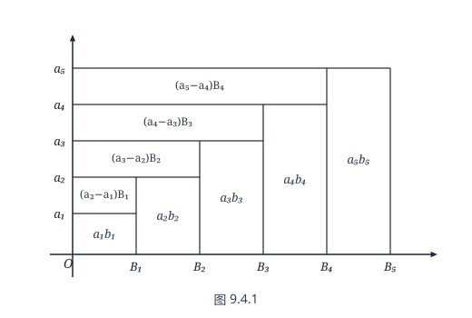

第九章 数项级数
§1 数项级数的收敛性
早在大约公元前 450 年，古希腊有一位名叫 Zeno 的学者，曾提出若干个在数学发展史上产生过重大影响的悖论，“Achilles（希腊神话中的英雄）追赶乌龟”即是其中较为著名的一个．
设乌龟在 Achilles 前面 $S_1$（米）处向前爬行，Achilles 在后面追赶，当 Achilles 用了 $t_1$（秒）时间，跑完 $S_1$（米）时，乌龟已向前爬了 $S_2$（米）；当 Achilles 再用 $t_2$（秒）时间，跑完 $S_2$（米）时，乌龟又向前爬了 $S_3$（米）……这样的过程可以一直继续下去，因此 Achilles 永远也追不上乌龟．
显然，这一结论完全有悖于常识，是绝对荒谬的．没有人会怀疑，Achilles 必将在 $T$（秒）时间内，跑了 $S$（米）后追上乌龟（$T$ 和 $S$ 是常数）．Zeno 的诡辩之处就在于把有限的时间 $T$（或距离 $S$）分割成无穷段 $t_1, t_2, \dots$（或 $S_1, S_2, \dots$），然后一段一段地加以叙述，从而造成一种假象：这样“追-爬-追-爬”的过程将随时间的流逝而永无止境．事实上，如果将用掉的时间 $t_1, t_2, \dots$（或跑过的距离 $S_1, S_2, \dots$）加起来，即
$$ T = t_1 + t_2 + \dots + t_n + \dots \quad (\text{或 } S = S_1 + S_2 + \dots + S_n + \dots), $$尽管相加的项有无限个，但它们的和却是有限数 $T$（或 $S$）．换言之，经过时间 $T$（秒），Achilles 跑完 $S$（米）后，他已经追上乌龟了．
这里，我们遇到了无限个数相加的问题．很自然地，我们要问，这种“无限个数相加”是否一定有意义？若不一定的话，那么怎么来判别？有限个数相加时的一些运算法则，如加法交换律、加法结合律对于无限个数相加是否继续有效？如此等等．这正是本章要讨论的数项级数的一些概念．
数项级数
设 $x_1, x_2, \dots, x_n, \dots$ 是无穷可列个实数，我们称它们的“和”
$$ x_1 + x_2 + \dots + x_n + \dots $$为无穷数项级数（简称级数），记为 $\sum_{n=1}^\infty x_n$ 或 $\sum x_n$，其中 $x_n$ 称为级数的通项或一般项．
当然，我们无法直接对无穷多个实数逐一地进行加法运算，所以必须对上述的级数求和给出合理的定义．
为此作级数 $\sum_{n=1}^\infty x_n$ 的“部分和数列” $\{S_n\}$：
$$ \begin{aligned} S_1 &= x_1, \\ S_2 &= x_1 + x_2, \\ S_3 &= x_1 + x_2 + x_3, \\ &\dots\dots \\ S_n &= x_1 + x_2 + \dots + x_n = \sum_{k=1}^n x_k. \end{aligned} $$定义 9.1.1
如果部分和数列 $\{S_n\}$ 收敛于有限数 $S$，则称无穷级数 $\sum_{n=1}^\infty x_n$ 收敛，且称它的和为 $S$，记为
$$ \sum_{n=1}^\infty x_n = S \quad \left(\text{或 } \sum_{n=1}^\infty x_n = x_1 + x_2 + \dots + x_n + \dots = S\right). $$如果部分和数列 $\{S_n\}$ 发散，则称无穷级数 $\sum_{n=1}^\infty x_n$ 发散．
由上述定义可知，只有当无穷级数收敛时，无穷多个实数的加法才是有意义的，并且它们的和就是级数的部分和数列的极限．所以，级数的收敛与数列的收敛本质上是一回事．
例 9.1.1
设 $|q| < 1$，则几何级数（即等比级数）
$$ \sum_{n=0}^\infty q^n = 1 + q + q^2 + \dots + q^n + \dots $$是收敛的．这是因为它的部分和数列的通项为
$$ S_n = 1 + q + q^2 + \dots + q^{n-1} = \frac{1 - q^n}{1 - q}, $$显然，
$$ \lim_{n \to \infty} S_n = \lim_{n \to \infty} \frac{1 - q^n}{1 - q} = \frac{1}{1 - q}. $$现在我们来回答本章开头提出的 Achilles 追赶乌龟的问题．
设乌龟的速度 $v_1$（$\mathrm{m/s}$）与 Achilles 的速度 $v_0$（$\mathrm{m/s}$）之比为 $q = \dfrac{v_1}{v_0}$，$0 < q < 1$．Achilles 在乌龟后面 $S_1$（$\mathrm{m}$）处开始追赶乌龟．当 Achilles 跑完 $S_1$（$\mathrm{m}$）时，乌龟已向前爬了 $S_2 = qS_1$（$\mathrm{m}$）；当 Achilles 继续跑完 $S_2$（$\mathrm{m}$）时，乌龟又向前爬了 $S_3 = q^2 S_1$（$\mathrm{m}$）……当 Achilles 继续跑完 $S_n$（$\mathrm{m}$）时，乌龟又向前爬了 $S_{n+1} = q^n S_1$（$\mathrm{m}$）……显然 Achilles 要追赶上乌龟，必须跑完上述无限段路程 $S_1, S_2, \dots, S_n, \dots$．由于
$$ S_1 + S_2 + \dots + S_n + \dots = S_1(1 + q + q^2 + \dots + q^n + \dots) = \frac{S_1}{1 - q}, $$即我们在前面所说的，这无限段路程的和却是有限的，也就是说，当 Achilles 跑完路程 $S = \dfrac{S_1}{1 - q}$（$\mathrm{m}$）（即经过了时间 $T = \dfrac{S_1}{(1 - q)v_0}$（$\mathrm{s}$））时，他已经追上了乌龟．
例 9.1.2
级数
$$ \sum_{n=1}^\infty (-1)^{n-1} = 1 - 1 + 1 - 1 + \dots + (-1)^{n-1} + \dots $$是发散的．这是因为它的部分和数列的通项为
$$ S_n = \begin{cases} 0, & n \text{ 为偶数}, \\ 1, & n \text{ 为奇数}. \end{cases} $$显然 $\{S_n\}$ 是发散的．
例 9.1.3
由第二章的例 2.4.7 可以知道，级数
$$ \sum_{n=1}^\infty \frac{1}{n^p} = 1 + \frac{1}{2^p} + \frac{1}{3^p} + \dots + \frac{1}{n^p} + \dots \quad (p > 0) $$当 $p > 1$ 时收敛；当 $0 < p \leqslant 1$ 时发散到正无穷大．
$\sum_{n=1}^\infty \dfrac{1}{n^p}$ 称为 $p$-级数（$p = 1$ 时又称 $\sum_{n=1}^\infty \dfrac{1}{n}$ 为调和级数），它在判别其他级数的敛散情况时有重要作用．
当级数 $\sum_{n=1}^\infty x_n$ 收敛时，我们还可以构作它的“余和数列” $\{r_n\}$，其中
$$ r_n = \sum_{k=n+1}^\infty x_k = x_{n+1} + x_{n+2} + \dots $$显然，$r_n = S - S_n$，且有 $\lim_{n \to \infty} r_n = 0$．
级数的基本性质
可以由数列的性质平行地导出级数的一些性质．
定理 9.1.1（级数收敛的必要条件）
设级数 $\sum_{n=1}^\infty x_n$ 收敛，则其通项所构成的数列 $\{x_n\}$ 是无穷小量，即
$$ \lim_{n \to \infty} x_n = 0. $$证 设 $\sum_{n=1}^\infty x_n = S$，则对 $S_n = \sum_{k=1}^n x_k$，成立
$$ \lim_{n \to \infty} S_n = \lim_{n \to \infty} S_{n-1} = S, $$于是得到
$$ \lim_{n \to \infty} x_n = \lim_{n \to \infty} (S_n - S_{n-1}) = S - S = 0. $$证毕
定理 9.1.1 可以用来判断某些级数发散．例如，当 $|q| \geqslant 1$ 时 $\{q^n\}$ 不是无穷小量，因此级数 $\sum_{n=0}^\infty q^n$ 发散．
要注意的是，定理 9.1.1 只是级数收敛的必要条件，而非充分条件．换言之，数列 $\{x_n\}$ 为无穷小量并不能保证级数 $\sum x_n$ 收敛．例如，虽然数列 $\left\{\dfrac{1}{n}\right\}$ 是无穷小量，但级数
$$ \sum_{n=1}^\infty \frac{1}{n} = 1 + \frac{1}{2} + \frac{1}{3} + \dots + \frac{1}{n} + \dots $$却是发散的．
定理 9.1.2（线性性）
设 $\sum_{n=1}^\infty a_n = A$，$\sum_{n=1}^\infty b_n = B$，$\alpha, \beta$ 是两个常数，则
$$ \sum_{n=1}^\infty (\alpha a_n + \beta b_n) = \alpha A + \beta B. $$证 设 $\sum_{n=1}^\infty a_n$ 的部分和数列为 $\{S_n^{(1)}\}$，$\sum_{n=1}^\infty b_n$ 的部分和数列为 $\{S_n^{(2)}\}$，则对 $\sum_{n=1}^\infty (\alpha a_n + \beta b_n)$ 的部分和数列 $\{S_n\}$ 有
$$ S_n = \alpha S_n^{(1)} + \beta S_n^{(2)}, $$于是成立
$$ \lim_{n \to \infty} S_n = \alpha \lim_{n \to \infty} S_n^{(1)} + \beta \lim_{n \to \infty} S_n^{(2)} = \alpha A + \beta B. $$证毕
定理 9.1.2 说明，对收敛级数可以进行加法和数乘运算．
例 9.1.4
求级数 $\sum_{n=1}^\infty \frac{4^{n+1} - 3 \cdot 2^n}{5^n}$ 的值．
解 因为几何级数 $\sum_{n=1}^\infty \left(\dfrac{4}{5}\right)^n$ 与 $\sum_{n=1}^\infty \left(\dfrac{2}{5}\right)^n$ 都收敛，所以有
$$ \begin{aligned} \sum_{n=1}^\infty \frac{4^{n+1} - 3 \cdot 2^n}{5^n} &= 4 \sum_{n=1}^\infty \left(\frac{4}{5}\right)^n - 3 \sum_{n=1}^\infty \left(\frac{2}{5}\right)^n \\ &= 4 \cdot \frac{\frac{4}{5}}{1 - \frac{4}{5}} - 3 \cdot \frac{\frac{2}{5}}{1 - \frac{2}{5}} = 16 - 2 = 14. \end{aligned} $$定理 9.1.3
设级数 $\sum_{n=1}^\infty x_n$ 收敛，则在它的求和表达式中任意添加括号后所得的级数仍然收敛，且其和不变．
证 设 $\sum_{n=1}^\infty x_n$ 添加括号后表示为
$$ (x_1 + x_2 + \dots + x_{n_1}) + (x_{n_1+1} + x_{n_1+2} + \dots + x_{n_2}) + \dots + (x_{n_{k-1}+1} + x_{n_{k-1}+2} + \dots + x_{n_k}) + \dots, $$令
$$ \begin{aligned} y_1 &= x_1 + x_2 + \dots + x_{n_1}, \\ y_2 &= x_{n_1+1} + x_{n_1+2} + \dots + x_{n_2}, \\ &\dots\dots \\ y_k &= x_{n_{k-1}+1} + x_{n_{k-1}+2} + \dots + x_{n_k}, \\ &\dots\dots \end{aligned} $$则 $\sum_{n=1}^\infty x_n$ 按上面方式添加括号后所得的级数为 $\sum_{n=1}^\infty y_n$．令 $\sum_{n=1}^\infty x_n$ 的部分和数列为 $\{S_n\}$，$\sum_{n=1}^\infty y_n$ 的部分和数列为 $\{U_n\}$，则
$$ \begin{aligned} U_1 &= S_{n_1}, \\ U_2 &= S_{n_2}, \\ &\dots\dots \\ U_k &= S_{n_k}, \\ &\dots\dots \end{aligned} $$显然 $\{U_k\}$ 是 $\{S_n\}$ 的一个子列，于是由 $\{S_n\}$ 的收敛性即得到 $\{U_k\}$ 的收敛性，且极限相同．
证毕
定理 9.1.3 可以理解为，收敛的级数满足加法结合律．
在极限论中我们已经知道，一个数列的某个子列收敛并不能保证数列本身收敛．因此，相应地，在一个级数的和式中，添加了括号后所得的级数收敛并不能保证原来的级数收敛，即上面的级数 $\sum_{n=1}^\infty y_n$ 收敛并不能保证级数 $\sum_{n=1}^\infty x_n$ 收敛．
例 9.1.5
我们已知例 9.1.2 中的级数
$$ \sum_{n=1}^\infty (-1)^{n-1} = 1 - 1 + 1 - \dots + (-1)^{n-1} + \dots $$是发散的．但若在每两项之间加上括号，则有
$$ (1 - 1) + (1 - 1) + \dots + (1 - 1) + \dots = 0 + 0 + \dots + 0 + \dots = 0, $$即添加了括号后所得的级数是收敛的．
更有甚者，对一个发散的级数，若按不同的方式加括号，所得的级数可能收敛于不同的极限．仍以
$$ \sum_{n=1}^\infty (-1)^{n-1} = 1 - 1 + 1 - \dots + (-1)^{n-1} + \dots $$为例，除了上面的加括号方式外，还可以有
$$ 1 + (-1 + 1) + (-1 + 1) + \dots + (-1 + 1) + \dots = 1 + 0 + 0 + \dots + 0 + \dots = 1 $$的不同结果．
这就是说，发散的级数不满足加法结合律．
例 9.1.6
计算机进行计算时所处理的数据都是二进制的，求二进制无限循环小数 $(110.110110\dots)_2$ 的值．
解
$$ (110.110110\dots)_2 = 2^2 + 2^1 + \frac{1}{2} + \frac{1}{2^2} + \frac{1}{2^4} + \frac{1}{2^5} + \frac{1}{2^7} + \frac{1}{2^8} + \dots $$设上述无穷级数的部分和数列为 $\{S_n\}$，则
$$ S_{2n} = \sum_{k=1}^n \left(\frac{1}{2^{3k-5}} + \frac{1}{2^{3k-4}}\right) = 6\frac{6}{7}\left[1 - \left(\frac{1}{8}\right)^n\right], $$ $$ S_{2n+1} = S_{2n} + \frac{1}{2^{3n-2}}, $$令 $n \to \infty$，得
$$ \lim_{n\to\infty} S_n = 6\frac{6}{7}, $$即二进制无限循环小数 $(110.110110\dots)_2$ 的值为 $6\frac{6}{7}$．
例 9.1.7
一慢性病患者需每天服用某种药物，按医嘱每天服用 $0.05\text{ mg}$，设体内的药物每天有 $20\%$ 通过各种渠道排泄掉，问长期服药后患者体内药量维持在怎样的水平？
解 服药第一天，患者体内药量为 $0.05\text{ mg}$；服药第二天，患者体内药量为 $0.05(1 - 20\%) + 0.05 = 0.05\left(1 + \frac{4}{5}\right)\text{ mg}$；服药第三天，患者体内药量为 $[0.05(1 - 20\%) + 0.05](1 - 20\%) + 0.05 = 0.05\left[1 + \frac{4}{5} + \left(\frac{4}{5}\right)^2\right]\text{ mg} \dots\dots$ 以此类推，长期服药后，患者体内药量为
$$ 0.05\left[1 + \frac{4}{5} + \left(\frac{4}{5}\right)^2 + \left(\frac{4}{5}\right)^3 + \dots\right] = 0.05 \sum_{n=0}^\infty \left(\frac{4}{5}\right)^n = 0.25\text{ (mg)}. $$在实际病例中，医生往往根据患者的病情，考虑体内药量水平的需求，确定患者每天的服药量．
例 9.1.8
计算级数 $\sum_{n=1}^\infty \frac{2n - 1}{2^n}$．
解 设级数的部分和数列为 $\{S_n\}$，则
$$ \begin{aligned} S_n &= 2S_n - S_n = 2\sum_{k=1}^n \frac{2k - 1}{2^k} - \sum_{k=1}^n \frac{2k - 1}{2^k} \\ &= \sum_{k=0}^{n-1} \frac{2k + 1}{2^k} - \sum_{k=1}^n \frac{2k - 1}{2^k} = 1 + \sum_{k=1}^{n-1} \frac{1}{2^{k-1}} - \frac{2n - 1}{2^n}, \end{aligned} $$于是
$$ \lim_{n\to\infty} S_n = 1 + \sum_{k=0}^\infty \frac{1}{2^k} = 3. $$例 9.1.9
计算级数 $\sum_{n=1}^\infty \arctan \frac{1}{2n^2}$．
解 利用公式
$$ \arctan x - \arctan y = \arctan \frac{x - y}{1 + xy} $$可得
$$ \arctan \frac{1}{2n^2} = \arctan \frac{1}{2n - 1} - \arctan \frac{1}{2n + 1}, $$于是关于级数的部分和有
$$ S_n = \arctan 1 - \arctan \frac{1}{2n + 1}, $$令 $n \to \infty$，即得
$$ \sum_{n=1}^\infty \arctan \frac{1}{2n^2} = \frac{\pi}{4}. $$习题 9.1
-
讨论下列级数的敛散性．收敛的话，试求出级数之和．
(1) $\sum_{n=1}^\infty \frac{1}{n(n+2)}$；
(2) $\sum_{n=1}^\infty \frac{2n}{3n+1}$；
(3) $\sum_{n=1}^\infty \frac{1}{n(n+1)(n+2)}$；
(4) $\sum_{n=1}^\infty \left(\frac{1}{2^n} - \frac{1}{3^n}\right)$；
(5) $\sum_{n=1}^\infty \frac{1}{\sqrt{n}}$；
(6) $\sum_{n=1}^\infty \frac{5^{n-1} + 4^{n+1}}{3^{2n}}$；
(7) $\sum_{n=1}^\infty (\sqrt{n+2} - 2\sqrt{n+1} + \sqrt{n})$；
(8) $\sum_{n=1}^\infty \frac{2n-1}{3^n}$；
(9) $\sum_{n=0}^\infty q^n \cos n\theta \quad (|q| < 1)$．
-
确定 $x$ 的范围，使下列级数收敛：
(1) $\sum_{n=1}^\infty \frac{1}{(1-x)^n}$；
(2) $\sum_{n=1}^\infty \mathrm{e}^{nx}$；
(3) $\sum_{n=1}^\infty x^n(1-x)$．
-
求八进制无限循环小数 $(36.0736073607\dots)_8$ 的值．
-
设 $x_n = \int_0^1 x^2 (1-x)^n \mathrm{d}x$，求级数 $\sum_{n=1}^\infty x_n$ 的和．
-
设抛物线 $l_n: y = nx^2 + \frac{1}{n}$ 和 $l'_n: y = (n+1)x^2 + \frac{1}{n+1}$ 的交点的横坐标的绝对值为 $a_n$ ($n=1, 2, \dots$)．
(1) 求抛物线 $l_n$ 与 $l'_n$ 所围成的平面图形的面积 $S_n$；
(2) 求级数 $\sum_{n=1}^\infty \frac{S_n}{a_n}$ 的和．
§2 上极限与下极限
数列的上极限和下极限
研究级数的敛散性常常需要借助于某些数列，但这些数列本身却不一定收敛，因而有必要引进比“极限存在”稍弱一些、并在一定程度上反映其变化规律的新概念．
Bolzano-Weierstrass 定理告诉我们，有界数列中必有收敛子列．这启示我们，对不存在极限的数列，或许可以用它的子列的极限情况来刻画它本身的变化情况．
先考虑有界数列的情况．
定义 9.2.1
在有界数列 $\{x_n\}$ 中，若存在它的一个子列 $\{x_{n_k}\}$ 使得
$$ \lim_{k\to\infty} x_{n_k} = \xi, $$则称 $\xi$ 为数列 $\{x_n\}$ 的一个极限点．
显然，“$\xi$ 是数列 $\{x_n\}$ 的极限点”也可以等价地表述为：“对于任意给定的 $\varepsilon > 0$，存在 $\{x_n\}$ 中的无穷多个项属于 $\xi$ 的 $\varepsilon$ 邻域”．
记
$$ E = \{\xi \mid \xi \text{ 是 } \{x_n\} \text{ 的极限点}\}, $$则 $E$ 显然是非空的有界集合，因此，$E$ 的上确界 $H = \sup E$ 和下确界 $h = \inf E$ 存在．
定理 9.2.1
$E$ 的上确界 $H$ 和下确界 $h$ 均属于 $E$，即
$$ H = \max E, \quad h = \min E. $$证 由 $H = \sup E$ 可知，存在 $\xi_k \in E$ ($k=1, 2, \dots$)，使得
$$ \lim_{k\to\infty} \xi_k = H. $$取 $\varepsilon_k = \frac{1}{k}$ ($k=1, 2, \dots$)．
因为 $\xi_1$ 是 $\{x_n\}$ 的极限点，所以在 $O(\xi_1, \varepsilon_1)$ 中有 $\{x_n\}$ 的无穷多个项，取 $x_{n_1} \in O(\xi_1, \varepsilon_1)$；
因为 $\xi_2$ 是 $\{x_n\}$ 的极限点，所以在 $O(\xi_2, \varepsilon_2)$ 中有 $\{x_n\}$ 的无穷多个项，可以取 $n_2 > n_1$，使得 $x_{n_2} \in O(\xi_2, \varepsilon_2)$；
$\dots\dots$
因为 $\xi_k$ 是 $\{x_n\}$ 的极限点，所以在 $O(\xi_k, \varepsilon_k)$ 中有 $\{x_n\}$ 的无穷多个项，可以取 $n_k > n_{k-1}$，使得 $x_{n_k} \in O(\xi_k, \varepsilon_k)$；
$\dots\dots$
这么一直做下去，便得到 $\{x_n\}$ 的子列 $\{x_{n_k}\}$，满足
$$ |x_{n_k} - \xi_k| < \frac{1}{k}, $$于是有
$$ \lim_{k\to\infty} x_{n_k} = \lim_{k\to\infty} \xi_k = H. $$由定义 9.2.1，$H$ 是 $\{x_n\}$ 的极限点，也就是说，$H \in E$．
同理可证 $h \in E$．
证毕
定义 9.2.2
$E$ 的最大值 $H = \max E$ 称为数列 $\{x_n\}$ 的上极限，记为
$$ H = \varlimsup_{n\to\infty} x_n; $$$E$ 的最小值 $h = \min E$ 称为数列 $\{x_n\}$ 的下极限，记为
$$ h = \varliminf_{n\to\infty} x_n. $$定理 9.2.2
设 $\{x_n\}$ 是有界数列，则 $\{x_n\}$ 收敛的充分必要条件是
$$ \varlimsup_{n\to\infty} x_n = \varliminf_{n\to\infty} x_n. $$证 若 $\{x_n\}$ 是收敛的，则它的任一子列收敛于同一极限（定理 2.4.4），因而此时 $E$ 中只有一个元素，于是成立
$$ \varlimsup_{n\to\infty} x_n = \varliminf_{n\to\infty} x_n = \lim_{n\to\infty} x_n. $$若 $\{x_n\}$ 不收敛，则至少存在它的两个子列收敛于不同极限，因此有
$$ \varlimsup_{n\to\infty} x_n > \varliminf_{n\to\infty} x_n. $$证毕
由于一个无上界（下界）数列中必有子列发散至正（负）无穷大，仍按上述思路，即可将极限点的定义扩充为
定义 9.2.1′
在数列 $\{x_n\}$ 中，若存在它的一个子列 $\{x_{n_k}\}$ 使得
$$ \lim_{k\to\infty} x_{n_k} = \xi \quad (-\infty \leqslant \xi \leqslant +\infty), $$则称 $\xi$ 为数列 $\{x_n\}$ 的一个极限点．
“$\xi = +\infty$（或 $-\infty$）是 $\{x_n\}$ 的极限点”也可以等价地表述为：对于任意给定的 $G > 0$，存在 $\{x_n\}$ 中的无穷多个项，使得 $x_n > G$（或 $x_n < -G$）．
同样地，仍定义 $E$ 为 $\{x_n\}$ 的极限点全体．当 $\xi = +\infty$（或 $-\infty$）是 $\{x_n\}$ 的极限点时，我们定义 $\sup E = +\infty$（或 $\inf E = -\infty$）；当 $\xi = +\infty$（或 $-\infty$）是 $\{x_n\}$ 的唯一极限点时，我们定义 $\sup E = \inf E = +\infty$（或 $\sup E = \inf E = -\infty$）．那么定理 9.2.1 依然成立，而定理 9.2.2 只要改为
定理 9.2.2′
$\lim_{n\to\infty} x_n$ 存在（有限数、$+\infty$ 或 $-\infty$）的充分必要条件是
$$ \varlimsup_{n\to\infty} x_n = \varliminf_{n\to\infty} x_n. $$请读者自行思考．
例 9.2.1
求数列 $\{x_n = \cos \frac{2n\pi}{5}\}$ 的上极限与下极限．
解 因为 $x_{5n-4} = x_{5n-1} = \cos \frac{2\pi}{5}$，$x_{5n-3} = x_{5n-2} = -\cos \frac{\pi}{5}$，$x_{5n} = 1$，所以 $\{x_n\}$ 的最大极限点是 $1$，最小极限点是 $-\cos \frac{\pi}{5}$，即
$$ \varlimsup_{n\to\infty} x_n = 1, \quad \varliminf_{n\to\infty} x_n = -\cos \frac{\pi}{5}. $$例 9.2.2
求数列 $\{x_n = n^{(-1)^n}\}$ 的上极限与下极限．
解 此数列为
$$ 1, 2, \frac{1}{3}, 4, \frac{1}{5}, 6, \frac{1}{7}, 8, \dots, $$它没有上界，因而 $\varlimsup_{n\to\infty} x_n = +\infty$．
又由 $x_n > 0$ 且 $\{x_{2n-1}\}$ 的极限为 $0$，即知
$$ \varliminf_{n\to\infty} x_n = 0. $$例 9.2.3
求数列 $\{x_n = -n\}$ 的上极限与下极限．
解 由于 $\lim_{n\to\infty} x_n = -\infty$，因而
$$ \varlimsup_{n\to\infty} x_n = \varliminf_{n\to\infty} x_n = \lim_{n\to\infty} x_n = -\infty. $$为了以后讨论问题的方便，先证明一个有用的结论．
定理 9.2.3
设 $\{x_n\}$ 是有界数列，则
(1) $\varlimsup_{n\to\infty} x_n = H$ 的充分必要条件是：对任意给定的 $\varepsilon > 0$，
(i) 存在正整数 $N$，使得
$$ x_n < H + \varepsilon $$对一切 $n > N$ 成立；
(ii) $\{x_n\}$ 中有无穷多项，满足
$$ x_n > H - \varepsilon. $$(2) $\varliminf_{n\to\infty} x_n = h$ 的充分必要条件是：对任意给定的 $\varepsilon > 0$，
(i) 存在正整数 $N$，使得
$$ x_n > h - \varepsilon $$对一切 $n > N$ 成立；
(ii) $\{x_n\}$ 中有无穷多项，满足
$$ x_n < h + \varepsilon. $$证 下面只给出 (1) 的证明，(2) 的证明类似．
必要性：由于 $H$ 是 $\{x_n\}$ 的最大极限点，因此对于任意给定的 $\varepsilon > 0$，在区间 $[H + \varepsilon, +\infty)$ 上至多只有 $\{x_n\}$ 中的有限项（请读者考虑为什么）．设这有限项中最大的下标为 $n_0$．显然，只要取 $N = n_0$，当 $n > N$ 时，必有
$$ x_n < H + \varepsilon, $$这就证明了 (i)．
由于 $H$ 是 $\{x_n\}$ 的极限点，因此 $\{x_n\}$ 中有无穷多项属于 $H$ 的 $\varepsilon$ 邻域，因此这无穷多个项满足
$$ x_n > H - \varepsilon, $$这就证明了 (ii)．
充分性：由 (i)，对任意给定的 $\varepsilon > 0$，存在正整数 $N$，使得当 $n > N$ 时，成立 $x_n < H + \varepsilon$，于是 $\varlimsup_{n\to\infty} x_n \leqslant H + \varepsilon$．由 $\varepsilon$ 的任意性知
$$ \varlimsup_{n\to\infty} x_n \leqslant H. $$由 (ii)，$\{x_n\}$ 中有无穷多项，满足 $x_n > H - \varepsilon$，于是 $\varlimsup_{n\to\infty} x_n \geqslant H - \varepsilon$．由 $\varepsilon$ 的任意性又可知
$$ \varlimsup_{n\to\infty} x_n \geqslant H. $$结合上述两式，就得到
$$ \varlimsup_{n\to\infty} x_n = H. $$证毕
上极限和下极限的运算
数列的上极限和下极限的运算一般不再具有数列极限运算的诸如“和差积商的极限等于极限的和差积商”之类的好性质．例如设 $x_n = (-1)^n, y_n = (-1)^{n+1}$，则 $\varlimsup_{n\to\infty} x_n + \varlimsup_{n\to\infty} y_n = 2$，而 $\varlimsup_{n\to\infty} (x_n + y_n) = 0$，两者并不相等．但我们还是可以得到下述关系．
定理 9.2.4
设 $\{x_n\}, \{y_n\}$ 是两数列，则
(1) $\varlimsup_{n\to\infty} (x_n + y_n) \leqslant \varlimsup_{n\to\infty} x_n + \varlimsup_{n\to\infty} y_n, \quad \varliminf_{n\to\infty} (x_n + y_n) \geqslant \varliminf_{n\to\infty} x_n + \varliminf_{n\to\infty} y_n$；
(2) 若 $\lim_{n\to\infty} x_n$ 存在，则
$$ \varlimsup_{n\to\infty} (x_n + y_n) = \lim_{n\to\infty} x_n + \varlimsup_{n\to\infty} y_n, \quad \varliminf_{n\to\infty} (x_n + y_n) = \lim_{n\to\infty} x_n + \varliminf_{n\to\infty} y_n. $$（要求上述诸式的右端不是待定型，即不为 $(+\infty) + (-\infty)$ 等．）
证 下面只给出 (1) 与 (2) 中第一式的证明，并假定式中出现的上极限是有限数（上极限是 $+\infty$ 或 $-\infty$ 的情况留给读者自证）．
记 $\varlimsup_{n\to\infty} x_n = H_1, \varlimsup_{n\to\infty} y_n = H_2$．
由定理 9.2.3，对任意给定的 $\varepsilon > 0$，存在正整数 $N$，对一切 $n > N$ 成立
$$ x_n < H_1 + \varepsilon, \quad y_n < H_2 + \varepsilon, $$即
$$ x_n + y_n < H_1 + H_2 + 2\varepsilon. $$所以
$$ \varlimsup_{n\to\infty} (x_n + y_n) \leqslant H_1 + H_2 + 2\varepsilon. $$由 $\varepsilon$ 的任意性，即得到
$$ \varlimsup_{n\to\infty} (x_n + y_n) \leqslant H_1 + H_2 = \varlimsup_{n\to\infty} x_n + \varlimsup_{n\to\infty} y_n. $$这就是 (1) 的第一式．
若 $\lim_{n\to\infty} x_n$ 存在，则由 (1) 的第一式，
$$ \varlimsup_{n\to\infty} y_n = \varlimsup_{n\to\infty} [(x_n + y_n) - x_n] \leqslant \varlimsup_{n\to\infty} (x_n + y_n) + \varlimsup_{n\to\infty} (-x_n), $$此式即为
$$ \varlimsup_{n\to\infty} (x_n + y_n) \geqslant \lim_{n\to\infty} x_n + \varlimsup_{n\to\infty} y_n. $$将上式结合
$$ \varlimsup_{n\to\infty} (x_n + y_n) \leqslant \lim_{n\to\infty} x_n + \varlimsup_{n\to\infty} y_n, $$即得到 (2) 的第一式．
证毕
定理 9.2.5
设 $\{x_n\}, \{y_n\}$ 是两数列，
(1) 若 $x_n \geqslant 0, y_n \geqslant 0$，则
$$ \varlimsup_{n\to\infty} (x_n y_n) \leqslant \varlimsup_{n\to\infty} x_n \cdot \varlimsup_{n\to\infty} y_n, $$ $$ \varliminf_{n\to\infty} (x_n y_n) \geqslant \varliminf_{n\to\infty} x_n \cdot \varliminf_{n\to\infty} y_n; $$(2) 若 $\lim_{n\to\infty} x_n = x, 0 < x < +\infty$，则
$$ \varlimsup_{n\to\infty} (x_n y_n) = \lim_{n\to\infty} x_n \cdot \varlimsup_{n\to\infty} y_n, $$ $$ \varliminf_{n\to\infty} (x_n y_n) = \lim_{n\to\infty} x_n \cdot \varliminf_{n\to\infty} y_n. $$（要求上述诸式的右端不是待定型，即不为 $0 \cdot (+\infty)$ 等．）
证 下面只给出 (2) 的第一式的证明，并假定 $\varlimsup_{n\to\infty} y_n$ 是有限数．
由 $\lim_{n\to\infty} x_n = x, 0 < x < +\infty$，可知对任意给定的 $\varepsilon$ ($0 < \varepsilon < x$)，存在正整数 $N_1$，对一切 $n > N_1$ 成立
$$ 0 < x - \varepsilon < x_n < x + \varepsilon. $$记 $\varlimsup_{n\to\infty} y_n = H_2$，由定理 9.2.3，对上述 $\varepsilon$ ($0 < \varepsilon < x$)，存在正整数 $N_2$，对一切 $n > N_2$ 成立
$$ y_n < H_2 + \varepsilon. $$取 $N = \max\{N_1, N_2\}$，则当 $n > N$ 时，成立
$$ x_n y_n < \max\{(x - \varepsilon)(H_2 + \varepsilon), (x + \varepsilon)(H_2 + \varepsilon)\}, $$于是有
$$ \varlimsup_{n\to\infty} (x_n y_n) \leqslant \max\{(x - \varepsilon)(H_2 + \varepsilon), (x + \varepsilon)(H_2 + \varepsilon)\}, $$由 $\varepsilon$ 的任意性，即得到
$$ \varlimsup_{n\to\infty} (x_n y_n) \leqslant x \cdot H_2 = \lim_{n\to\infty} x_n \cdot \varlimsup_{n\to\infty} y_n. $$由于
$$ \varlimsup_{n\to\infty} y_n = \varlimsup_{n\to\infty} \left[(x_n y_n) \cdot \frac{1}{x_n}\right] \leqslant \varlimsup_{n\to\infty} (x_n y_n) \cdot \lim_{n\to\infty} \frac{1}{x_n}, $$即
$$ \varlimsup_{n\to\infty} (x_n y_n) \geqslant \lim_{n\to\infty} x_n \cdot \varlimsup_{n\to\infty} y_n, $$两式结合即得到 (2) 的第一式．
证毕
注意在定理 9.2.5 中，若条件改变的话，则给出的关系式也将作相应的改变．例如，在 (1) 中将条件改为 $x_n \leqslant 0, y_n \geqslant 0$，在 (2) 中将条件改为 $\lim_{n\to\infty} x_n = x, -\infty < x < 0$，请读者考虑关系式将如何改变．因此，在对上极限和下极限进行运算时必须非常小心．
数列的上极限与下极限也可如下定义．
设 $\{x_n\}$ 是一个有界数列，令
$$ b_n = \sup\{x_{n+1}, x_{n+2}, \dots\} = \sup_{k>n} \{x_k\}, $$ $$ a_n = \inf\{x_{n+1}, x_{n+2}, \dots\} = \inf_{k>n} \{x_k\}, $$则 $\{a_n\}$ 是单调增加有上界的数列，$\{b_n\}$ 是单调减少有下界的数列，因此数列 $\{a_n\}$ 与 $\{b_n\}$ 都收敛．
记
$$ H^* = \lim_{n\to\infty} b_n = \lim_{n\to\infty} \sup_{k>n} \{x_k\}; $$ $$ h^* = \lim_{n\to\infty} a_n = \lim_{n\to\infty} \inf_{k>n} \{x_k\}. $$当数列 $\{x_n\}$ 无上界而有下界时，则对一切 $n \in \mathbf{N}^+$, $b_n = +\infty$，我们定义
$$ H^* = +\infty. $$这时数列 $\{a_n\}$ 单调增加，但也可能没有上界．如果 $h^* = \lim_{n\to\infty} a_n = +\infty$，则由
$$ a_{n-1} \leqslant x_n \leqslant b_{n-1}, $$可知 $\lim_{n\to\infty} x_n = +\infty$．
当数列 $\{x_n\}$ 无下界而有上界时，则对一切 $n \in \mathbf{N}^+$, $a_n = -\infty$，我们定义
$$ h^* = -\infty. $$这时数列 $\{b_n\}$ 单调减少，但也可能没有下界．如果 $H^* = \lim_{n\to\infty} b_n = -\infty$，则由
$$ a_{n-1} \leqslant x_n \leqslant b_{n-1}, $$可知 $\lim_{n\to\infty} x_n = -\infty$．
当数列 $\{x_n\}$ 既无上界又无下界时，则对一切 $n \in \mathbf{N}^+$, $a_n = -\infty, b_n = +\infty$，我们定义
$$ H^* = +\infty, \quad h^* = -\infty. $$所以，对于任意实数数列，尽管其极限可以不存在，但 $H^*$ 与 $h^*$ 总是存在的（有限数或 $+\infty$ 或 $-\infty$），且成立
$$ h^* \leqslant H^*. $$关于这一定义与定义 9.2.2 的等价性，我们有下述定理：
定理 9.2.6
$H^*$ 是 $\{x_n\}$ 的最大极限点，$h^*$ 是 $\{x_n\}$ 的最小极限点．
证 首先证明，$\{x_n\}$ 的任意一个极限点 $\xi$（有限数或 $+\infty$ 或 $-\infty$）满足
$$ h^* \leqslant \xi \leqslant H^*. $$设 $\lim_{k\to\infty} x_{n_k} = \xi$，则对一切 $k \in \mathbf{N}^+$，成立
$$ a_{n_k-1} \leqslant x_{n_k} \leqslant b_{n_k-1}, $$由 $\lim_{n\to\infty} a_n = h^*$, $\lim_{n\to\infty} b_n = H^*$ 与 $\lim_{k\to\infty} x_{n_k} = \xi$，得到
$$ h^* \leqslant \xi \leqslant H^*. $$其次证明，存在 $\{x_n\}$ 的子列 $\{x_{n_k}\}$ 与 $\{x_{m_k}\}$，使得
$$ \lim_{k\to\infty} x_{n_k} = H^*, \quad \lim_{k\to\infty} x_{m_k} = h^*. $$设 $\{x_n\}$ 的上极限 $H$ 与下极限 $h$ 都是有限数，取 $\varepsilon_k = \frac{1}{k}$, $k=1, 2, \dots$．
对 $\varepsilon_1 = 1$，由 $b_1 = \sup_{i>1} \{x_i\}$，$\exists\, n_1: b_1 - 1 < x_{n_1} \leqslant b_1$；
对 $\varepsilon_2 = \frac{1}{2}$，由 $b_{n_1} = \sup_{i>n_1} \{x_i\}$，$\exists\, n_2 > n_1: b_{n_1} - \frac{1}{2} < x_{n_2} \leqslant b_{n_1}$；
$\dots\dots$
对 $\varepsilon_{k+1} = \frac{1}{k+1}$，由 $b_{n_k} = \sup_{i>n_k} \{x_i\}$，$\exists\, n_{k+1} > n_k: b_{n_k} - \frac{1}{k+1} < x_{n_{k+1}} \leqslant b_{n_k}$；
$\dots\dots$
令 $k \to \infty$，由数列极限的夹逼性，得到
$$ \lim_{k\to\infty} x_{n_k} = \lim_{k\to\infty} b_{n_k} = \lim_{n\to\infty} b_n = H^*. $$同理可证存在子列 $\{x_{m_k}\}$，使得 $\lim_{k\to\infty} x_{m_k} = h^*$．
若 $\{x_n\}$ 无上界，即 $H^* = +\infty$，则显然存在子列 $\{x_{n_k}\}$ 是正无穷大量，即 $\lim_{k\to\infty} x_{n_k} = H^* = +\infty$；若 $H^* = -\infty$，前面已经指出 $\lim_{n\to\infty} x_n = H^* = -\infty$；若 $\{x_n\}$ 无下界，即 $h^* = -\infty$，则显然存在子列 $\{x_{m_k}\}$ 是负无穷大量，即 $\lim_{k\to\infty} x_{m_k} = h^* = -\infty$；若 $h^* = +\infty$，前面也已经指出 $\lim_{n\to\infty} x_n = h^* = +\infty$．
所以
$$ H^* = \max E = \varlimsup_{n\to\infty} x_n, \quad h^* = \min E = \varliminf_{n\to\infty} x_n. $$证毕
习题 9.2
-
求下列数列的上极限与下极限：
(1) $x_n = \frac{n}{2n+1}\cos \frac{2n\pi}{5}$；
(2) $x_n = n + (-1)^n \frac{n^2+1}{n}$；
(3) $x_n = -n [(-1)^n + 2]$；
(4) $x_n = \sqrt[n]{n+1} + \sin \frac{n\pi}{3}$；
(5) $x_n = 2(-1)^{n+1} + 3(-1)^{\frac{n(n-1)}{2}}$．
-
证明：
(1) $\varlimsup_{n\to\infty} (-x_n) = -\varliminf_{n\to\infty} x_n$；
(2) $\varlimsup_{n\to\infty} (cx_n) = \begin{cases} c \varlimsup_{n\to\infty} x_n, & c > 0, \\ c \varliminf_{n\to\infty} x_n, & c < 0. \end{cases}$
-
证明：
(1) $\varliminf_{n\to\infty} (x_n + y_n) \geqslant \varliminf_{n\to\infty} x_n + \varliminf_{n\to\infty} y_n$；
(2) 若 $\lim_{n\to\infty} x_n$ 存在，则 $\varliminf_{n\to\infty} (x_n + y_n) = \lim_{n\to\infty} x_n + \varliminf_{n\to\infty} y_n$．
-
证明：若 $\lim_{n\to\infty} x_n = x, -\infty < x < 0$，则
$$ \varlimsup_{n\to\infty} (x_n y_n) = \lim_{n\to\infty} x_n \cdot \varliminf_{n\to\infty} y_n; $$ $$ \varliminf_{n\to\infty} (x_n y_n) = \lim_{n\to\infty} x_n \cdot \varlimsup_{n\to\infty} y_n. $$
§3 正项级数
正项级数
§1 中 Achilles 追乌龟的路程所构成的级数 $S_1(1 + q + q^2 + \dots + q^{n-1} + q^n + \dots)$，例 9.1.7 中的级数 $0.05 \sum_{n=0}^\infty \left(\frac{4}{5}\right)^n$ 以及我们熟知的 $p$ 级数 $\sum_{n=1}^\infty \frac{1}{n^p}$，均有一个明显的特征：它们的各个项都是正数．
这是一类很特殊的级数．
定义 9.3.1
如果级数 $\sum_{n=1}^\infty x_n$ 的各项都是非负实数，即
$$ x_n \geqslant 0, \quad n = 1, 2, \dots, $$则称此级数为正项级数．
显然，正项级数 $\sum_{n=1}^\infty x_n$ 的部分和数列 $\{S_n\}$ 是单调增加的，即
$$ S_n = \sum_{k=1}^n x_k \leqslant \sum_{k=1}^{n+1} x_k = S_{n+1}, \quad n = 1, 2, \dots. $$根据单调数列的性质，立刻可以得到
定理 9.3.1（正项级数的收敛原理）
正项级数收敛的充分必要条件是它的部分和数列有上界．
若正项级数的部分和数列无上界，则其必发散到 $+\infty$．
例 9.3.1
级数 $\sum_{n=2}^\infty \left[\frac{1}{\sqrt[n]{n}} \ln \frac{n^2}{(n-1)(n+1)}\right]$ 是正项级数．它的部分和数列的通项
$$ S_n = \sum_{k=2}^{n+1} \left[\frac{1}{\sqrt[k]{k}} \ln \frac{k^2}{(k-1)(k+1)}\right] < \sum_{k=2}^{n+1} \left(\ln \frac{k}{k-1} - \ln \frac{k+1}{k}\right) = \ln 2 - \ln \frac{n+2}{n+1} < \ln 2, $$所以正项级数 $\sum_{n=2}^\infty \left[\frac{1}{\sqrt[n]{n}} \ln \frac{n^2}{(n-1)(n+1)}\right]$ 收敛．
下面我们就判断一般正项级数收敛与否的问题作深入讨论．
比较判别法
判断一个正项级数是否收敛，最常用的方法是用一个已知收敛或发散的级数与它进行比较．
定理 9.3.2（比较判别法）
设 $\sum_{n=1}^\infty x_n$ 与 $\sum_{n=1}^\infty y_n$ 是两个正项级数，若存在常数 $A > 0$，使得
$$ x_n \leqslant A y_n, \quad n = 1, 2, \dots, $$则
(1) 当 $\sum_{n=1}^\infty y_n$ 收敛时，$\sum_{n=1}^\infty x_n$ 也收敛；
(2) 当 $\sum_{n=1}^\infty x_n$ 发散时，$\sum_{n=1}^\infty y_n$ 也发散．
证 设级数 $\sum_{n=1}^\infty x_n$ 的部分和数列为 $\{S_n\}$，级数 $\sum_{n=1}^\infty y_n$ 的部分和数列为 $\{T_n\}$，则显然有
$$ S_n \leqslant A T_n, \quad n = 1, 2, \dots. $$于是当 $\{T_n\}$ 有上界时，$\{S_n\}$ 也有上界，而当 $\{S_n\}$ 无上界时，$\{T_n\}$ 必定无上界．由定理 9.3.1 即得结论．
证毕
注 由于改变级数有限个项的数值，并不会改变它的收敛性或发散性（虽然在收敛的情况下可能改变它的“和”），所以定理 9.3.2 的条件可放宽为：“存在正整数 $N$ 与常数 $A > 0$，使得 $x_n \leqslant A y_n$ 对一切 $n > N$ 成立”．
例 9.3.2
判断正项级数 $\sum_{n=1}^\infty \frac{n+3}{2n^3 - n}$ 的敛散性．
解 容易看出当 $n > 3$ 时成立
$$ \frac{n+3}{2n^3 - n} < \frac{1}{n^2}, $$于是由 $\sum_{n=1}^\infty \frac{1}{n^2}$ 的收敛性，可知 $\sum_{n=1}^\infty \frac{n+3}{2n^3 - n}$ 收敛．
例 9.3.3
判断正项级数 $\sum_{n=1}^\infty \sin \frac{\pi}{n}$ 的敛散性．
解 由于当 $x \in \left[0, \frac{\pi}{2}\right]$ 时，成立不等式 $\sin x \geqslant \frac{2}{\pi}x$，所以当 $n \geqslant 2$ 时，
$$ \sin \frac{\pi}{n} \geqslant \frac{2}{\pi} \cdot \frac{\pi}{n} = \frac{2}{n}, $$由于 $\sum_{n=1}^\infty \frac{1}{n}$ 是发散的，可知 $\sum_{n=1}^\infty \sin \frac{\pi}{n}$ 发散．
下述定理是定理 9.3.2 的极限形式，它在使用上更为方便．
定理 9.3.2′（比较判别法的极限形式）
设 $\sum_{n=1}^\infty x_n$ 与 $\sum_{n=1}^\infty y_n$ 是两个正项级数，且
$$ \lim_{n\to\infty} \frac{x_n}{y_n} = l \quad (0 \leqslant l \leqslant +\infty), $$则
(1) 若 $0 \leqslant l < +\infty$，则当 $\sum_{n=1}^\infty y_n$ 收敛时，$\sum_{n=1}^\infty x_n$ 也收敛；
(2) 若 $0 < l \leqslant +\infty$，则当 $\sum_{n=1}^\infty y_n$ 发散时，$\sum_{n=1}^\infty x_n$ 也发散．
所以当 $0 < l < +\infty$ 时，$\sum_{n=1}^\infty x_n$ 与 $\sum_{n=1}^\infty y_n$ 同时收敛或同时发散．
证 下面只给出 (1) 的证明，(2) 的证明类似．
由于 $\lim_{n\to\infty} \frac{x_n}{y_n} = l < +\infty$，由极限的性质知，存在正整数 $N$，当 $n > N$ 时，
$$ \frac{x_n}{y_n} < l + 1, $$因此
$$ x_n < (l + 1)y_n. $$由定理 9.3.2 即得所需结论．
证毕
在例 9.3.2 中，$\frac{n+3}{2n^3 - n} \sim \frac{1}{2n^2}$ ($n \to \infty$)，在例 9.3.3 中，$\sin \frac{\pi}{n} \sim \frac{\pi}{n}$ ($n \to \infty$)，利用定理 9.3.2′ 立刻就可得出 $\sum_{n=1}^\infty \frac{n+3}{2n^3 - n}$ 收敛与 $\sum_{n=1}^\infty \sin \frac{\pi}{n}$ 发散的结论．
例 9.3.4
判断正项级数 $\sum_{n=1}^\infty \left(\mathrm{e}^{\frac{1}{n^2}} - \cos \frac{\pi}{n}\right)$ 的敛散性．
解 因为
$$ \mathrm{e}^{\frac{1}{n^2}} - \cos \frac{\pi}{n} = \left[1 + \frac{1}{n^2} + o\left(\frac{1}{n^2}\right)\right] - \left[1 - \frac{1}{2}\left(\frac{\pi}{n}\right)^2 + o\left(\frac{1}{n^2}\right)\right] = \left(1 + \frac{\pi^2}{2}\right)\frac{1}{n^2} + o\left(\frac{1}{n^2}\right), $$所以
$$ \lim_{n\to\infty} \frac{\mathrm{e}^{\frac{1}{n^2}} - \cos \frac{\pi}{n}}{\frac{1}{n^2}} = 1 + \frac{\pi^2}{2}. $$由 $\sum_{n=1}^\infty \frac{1}{n^2}$ 收敛即知 $\sum_{n=1}^\infty \left(\mathrm{e}^{\frac{1}{n^2}} - \cos \frac{\pi}{n}\right)$ 收敛．
Cauchy 判别法与 d'Alembert 判别法
用比较判别法时，先要对所考虑的级数的收敛性有一个大致估计，进而找一个敛散性已知的合适级数与之相比较．但就绝大多数情况而言，这两个步骤都具有相当难度，因此，理想的判别方法似应着眼于对级数自身元素的分析．
正项等比级数 $\sum_{n=1}^\infty q^n$ ($q > 0$) 给我们以很重要的启示．众所周知，$\sum_{n=1}^\infty q^n$ 的敛散性只依赖于其后项与前项之比，即公比 $q$ 是否小于 $1$．直观地类比一下，容易想象，若一个级数 $\sum_{n=1}^\infty x_n$ 的后项与前项之比 $\frac{x_{n+1}}{x_n}$ 或前 $n$ 项的“平均公比” $\sqrt[n]{x_n}$（记 $x_0 = 1$，则 $\sqrt[n]{x_n} = \sqrt[n]{\frac{x_1}{x_0} \cdot \frac{x_2}{x_1} \dots \frac{x_n}{x_{n-1}}}$）存在小于（或大于）$1$ 的极限，则这个级数应该是收敛（或发散）的．若它们的极限不存在，那么可以通过讨论其上（下）极限来得到类似的结论．正是基于这样的思路，产生了如下的 Cauchy 判别法与 d'Alembert 判别法．
定理 9.3.3（Cauchy 判别法）
设 $\sum_{n=1}^\infty x_n$ 是正项级数，$r = \varlimsup_{n\to\infty} \sqrt[n]{x_n}$，则
(1) 当 $r < 1$ 时，级数 $\sum_{n=1}^\infty x_n$ 收敛；
(2) 当 $r > 1$ 时，级数 $\sum_{n=1}^\infty x_n$ 发散；
(3) 当 $r = 1$ 时，判别法失效，即级数可能收敛，也可能发散．
证 当 $r < 1$ 时，取 $q$ 满足 $r < q < 1$，由定理 9.2.3，可知存在正整数 $N$，使得对一切 $n > N$，成立
$$ \sqrt[n]{x_n} < q, $$从而
$$ x_n < q^n, \quad 0 < q < 1, $$由定理 9.3.2 可知 $\sum_{n=1}^\infty x_n$ 收敛．
当 $r > 1$ 时，由于 $r$ 是数列 $\{\sqrt[n]{x_n}\}$ 的极限点，可知存在无穷多个 $n$ 满足 $\sqrt[n]{x_n} > 1$，这说明数列 $\{x_n\}$ 不是无穷小量，从而 $\sum_{n=1}^\infty x_n$ 发散．
当 $r = 1$，可以通过级数 $\sum_{n=1}^\infty \frac{1}{n^2}$ 与 $\sum_{n=1}^\infty \frac{1}{n}$ 知道判别法失效．
证毕
例 9.3.5
判断正项级数 $\sum_{n=1}^\infty \frac{n^3 [\sqrt{2} + (-1)^n]^n}{3^n}$ 的敛散性．
解 由于
$$ \varlimsup_{n\to\infty} \sqrt[n]{\frac{n^3 [\sqrt{2} + (-1)^n]^n}{3^n}} = \frac{\sqrt{2} + 1}{3} < 1, $$由定理 9.3.3，级数 $\sum_{n=1}^\infty \frac{n^3 [\sqrt{2} + (-1)^n]^n}{3^n}$ 收敛．
定理 9.3.4（d'Alembert 判别法）
设 $\sum_{n=1}^\infty x_n$ ($x_n \neq 0$) 是正项级数，则
(1) 当 $\varlimsup_{n\to\infty} \frac{x_{n+1}}{x_n} = \bar{r} < 1$ 时，级数 $\sum_{n=1}^\infty x_n$ 收敛；
(2) 当 $\varliminf_{n\to\infty} \frac{x_{n+1}}{x_n} = \underline{r} > 1$ 时，级数 $\sum_{n=1}^\infty x_n$ 发散；
(3) 当 $\bar{r} \geqslant 1$ 或 $\underline{r} \leqslant 1$ 时，判别法失效，即级数可能收敛，也可能发散．
定理 9.3.4 的证明包含在下述引理中．
引理 9.3.1
设 $\{x_n\}$ 是正项数列，则
$$ \varliminf_{n\to\infty} \frac{x_{n+1}}{x_n} \leqslant \varliminf_{n\to\infty} \sqrt[n]{x_n} \leqslant \varlimsup_{n\to\infty} \sqrt[n]{x_n} \leqslant \varlimsup_{n\to\infty} \frac{x_{n+1}}{x_n}. $$证 设
$$ \bar{r} = \varlimsup_{n\to\infty} \frac{x_{n+1}}{x_n}, $$由定理 9.2.3，对任意给定的 $\varepsilon > 0$，存在正整数 $N$，使得对一切 $n > N$，成立
$$ \frac{x_{n+1}}{x_n} < \bar{r} + \varepsilon, $$于是
$$ x_n < (\bar{r} + \varepsilon)^{n-N-1} \cdot x_{N+1} \quad (n > N + 1), $$从而
$$ \varlimsup_{n\to\infty} \sqrt[n]{x_n} \leqslant \lim_{n\to\infty} \sqrt[n]{(\bar{r} + \varepsilon)^{n-N-1} \cdot x_{N+1}} = \bar{r} + \varepsilon, $$由 $\varepsilon$ 的任意性，即得到
$$ \varlimsup_{n\to\infty} \sqrt[n]{x_n} \leqslant \bar{r} = \varlimsup_{n\to\infty} \frac{x_{n+1}}{x_n}. $$读者可以按类似思路，自己证明
$$ \varliminf_{n\to\infty} \frac{x_{n+1}}{x_n} \leqslant \varliminf_{n\to\infty} \sqrt[n]{x_n}. $$证毕
例 9.3.6
判断正项级数 $\sum_{n=1}^\infty \frac{n^n}{3^n \cdot n!}$ 的敛散性．
解 令 $x_n = \frac{n^n}{3^n \cdot n!}$，则
$$ \lim_{n\to\infty} \frac{x_{n+1}}{x_n} = \lim_{n\to\infty} \left[\frac{(n+1)^{n+1}}{3^{n+1} \cdot (n+1)!} \cdot \frac{3^n \cdot n!}{n^n}\right] = \lim_{n\to\infty} \frac{1}{3}\left(1 + \frac{1}{n}\right)^n = \frac{\mathrm{e}}{3} < 1, $$由 d'Alembert 判别法可知级数 $\sum_{n=1}^\infty \frac{n^n}{3^n \cdot n!}$ 收敛．
引理 9.3.1 告诉我们：若一个正项级数的敛散情况可以由 d'Alembert 判别法判定，则它一定也能用 Cauchy 判别法来判定．但是，能用 Cauchy 判别法判定的，却未必能用 d'Alembert 判别法判定．
例 9.3.7
考虑级数
$$ \sum_{n=1}^\infty x_n = \frac{1}{2} + \frac{1}{3} + \frac{1}{2^2} + \frac{1}{3^2} + \frac{1}{2^3} + \frac{1}{3^3} + \dots, $$则
$$ \varlimsup_{n\to\infty} \sqrt[n]{x_n} = \lim_{n\to\infty} \sqrt[2n-1]{\frac{1}{2^n}} = \frac{1}{\sqrt{2}}; $$ $$ \varlimsup_{n\to\infty} \frac{x_{n+1}}{x_n} = \lim_{n\to\infty} \frac{3^n}{2^{n+1}} = +\infty; $$ $$ \varliminf_{n\to\infty} \frac{x_{n+1}}{x_n} = \lim_{n\to\infty} \frac{2^n}{3^n} = 0. $$由 Cauchy 判别法可知级数 $\sum_{n=1}^\infty x_n$ 收敛，但 d'Alembert 判别法却是失效的．这就是说，Cauchy 判别法的适用范围比 d'Alembert 判别法广．但是，对某些具体例子而言，两种判别法都适用，而 d'Alembert 判别法比 Cauchy 判别法更方便一些．读者应根据级数的具体情况来选择合适的判别法．
Cauchy 判别法与 d'Alembert 判别法的本质是比较判别法，与之相比较的是几何级数 $\sum_{n=1}^\infty q^n$：在判定级数收敛时，要求级数的通项受到 $q^n$ ($0 < q < 1$) 的控制；而在判定级数发散时，则是根据其一般项不趋于 0．由于这两者相去甚远，因此判别法在许多情况下会失效，即便对 $\sum_{n=1}^\infty \frac{1}{n^p}$ 这样简单的级数，它们也都无能为力．下面我们介绍的一些判别法将在一定程度上弥补上述的局限性．
Raabe 判别法
对某些正项级数 $\sum_{n=1}^\infty x_n$，成立 $\lim_{n\to\infty} \frac{x_{n+1}}{x_n} = 1$（或者说 $\lim_{n\to\infty} \frac{x_n}{x_{n+1}} = 1$），这时 Cauchy 判别法与 d'Alembert 判别法都失效，下面给出一种针对这类情况的判别法．
定理 9.3.5（Raabe 判别法）
设 $\sum_{n=1}^\infty x_n$ ($x_n \neq 0$) 是正项级数，$\lim_{n\to\infty} n\left(\frac{x_n}{x_{n+1}} - 1\right) = r$，则
(1) 当 $r > 1$ 时，级数 $\sum_{n=1}^\infty x_n$ 收敛；
(2) 当 $r < 1$ 时，级数 $\sum_{n=1}^\infty x_n$ 发散．
证 设 $s > t > 1$，$f(x) = 1 + sx - (1 + x)^t$，由 $f(0) = 0$ 与 $f'(0) = s - t > 0$，可知存在 $\delta > 0$，当 $0 < x < \delta$ 时，成立
$$ 1 + sx > (1 + x)^t. \tag{*} $$当 $r > 1$ 时，取 $s, t$ 满足 $r > s > t > 1$．由 $\lim_{n\to\infty} n\left(\frac{x_n}{x_{n+1}} - 1\right) = r > s > t$ 与不等式 (*)，可知对于充分大的 $n$，成立
$$ \frac{x_n}{x_{n+1}} > 1 + \frac{s}{n} > \left(1 + \frac{1}{n}\right)^t = \frac{(n+1)^t}{n^t}. $$这说明正项数列 $\{n^t x_n\}$ 从某一项开始单调减少，因而其必有上界，设
$$ n^t x_n \leqslant A, $$于是
$$ x_n \leqslant \frac{A}{n^t}. $$由于 $t > 1$，因而 $\sum_{n=1}^\infty \frac{1}{n^t}$ 收敛，根据比较判别法即得到 $\sum_{n=1}^\infty x_n$ 的收敛性．
当 $\lim_{n\to\infty} n\left(\frac{x_n}{x_{n+1}} - 1\right) = r < 1$，则对于充分大的 $n$，成立
$$ \frac{x_n}{x_{n+1}} < 1 + \frac{1}{n} = \frac{n+1}{n}, $$这说明正项数列 $\{n x_n\}$ 从某一项开始单调增加，因而存在正整数 $N$ 与实数 $\alpha > 0$，使得对一切 $n > N$ 成立，于是
$$ n x_n > \alpha, $$ $$ x_n > \frac{\alpha}{n}. $$由于 $\sum_{n=1}^\infty \frac{1}{n}$ 发散，根据比较判别法即得到 $\sum_{n=1}^\infty x_n$ 发散．
证毕
例 9.3.8
判断级数 $1 + \sum_{n=1}^\infty \frac{(2n-1)!!}{(2n)!!} \cdot \frac{1}{2n+1}$ 的敛散性．
解 设 $x_n = \frac{(2n-1)!!}{(2n)!!} \cdot \frac{1}{2n+1}$，则
$$ \lim_{n\to\infty} \frac{x_{n+1}}{x_n} = \lim_{n\to\infty} \frac{(2n+1)^2}{(2n+2)(2n+3)} = 1, $$也就是说，此时 Cauchy 判别法与 d'Alembert 判别法都不适用，但应用 Raabe 判别法，可得
$$ \lim_{n\to\infty} n\left(\frac{x_n}{x_{n+1}} - 1\right) = \lim_{n\to\infty} \frac{n(6n+5)}{(2n+1)^2} = \frac{3}{2} > 1, $$所以级数 $1 + \sum_{n=1}^\infty \frac{(2n-1)!!}{(2n)!!} \cdot \frac{1}{2n+1}$ 收敛．
注 虽然 Raabe 判别法有时可以处理 d'Alembert 判别法失效（即出现 $\lim_{n\to\infty} \frac{x_{n+1}}{x_n} = 1$ 的情况）的级数，但当 $\lim_{n\to\infty} n\left(\frac{x_n}{x_{n+1}} - 1\right) = 1$ 时 Raabe 判别法仍失效，即级数可能收敛，也可能发散．例如对于正项级数 $\sum_{n=2}^\infty \frac{1}{n \ln^q n}$，成立 $\lim_{n\to\infty} n\left(\frac{x_n}{x_{n+1}} - 1\right) = 1$，但由下面的例 9.3.9，我们会知道级数 $\sum_{n=2}^\infty \frac{1}{n \ln^q n}$ 当 $q > 1$ 时收敛，当 $q \leqslant 1$ 时发散．事实上，还可以建立比 Raabe 判别法更有效的判别法，例如 Bertrand 判别法：设 $\lim_{n\to\infty} (\ln n)\left[n\left(\frac{x_n}{x_{n+1}} - 1\right) - 1\right] = r$，则当 $r > 1$ 时级数 $\sum_{n=1}^\infty x_n$ 收敛；当 $r < 1$ 时级数 $\sum_{n=1}^\infty x_n$ 发散．但当 $r = 1$ 时，判别法又失效了．这个过程（即逐次建立更有效的判别法的过程）是无限的，虽然每次都能得到新的、适用范围更广的判别法，但这些判别法的证明也变得更加复杂．这里就不再进一步介绍了．
积分判别法
设 $f(x)$ 定义于 $[a, +\infty)$，并且 $f(x) \geqslant 0$，进一步设 $f(x)$ 在任意有限区间 $[a, A]$ 上 Riemann 可积．
取一单调增加趋于 $+\infty$ 的数列 $\{a_n\}$：
$$ a = a_1 < a_2 < a_3 < \dots < a_n < \dots, $$令
$$ u_n = \int_{a_n}^{a_{n+1}} f(x)\mathrm{d}x. $$定理 9.3.6（积分判别法）
反常积分 $\int_a^{+\infty} f(x)\mathrm{d}x$ 与正项级数 $\sum_{n=1}^\infty u_n$ 同时收敛或同时发散于 $+\infty$，且
$$ \int_a^{+\infty} f(x)\mathrm{d}x = \sum_{n=1}^\infty u_n = \sum_{n=1}^\infty \int_{a_n}^{a_{n+1}} f(x)\mathrm{d}x. $$特别地，当 $f(x)$ 单调减少时，取 $a_n = n$，则反常积分 $\int_a^{+\infty} f(x)\mathrm{d}x$ 与正项级数 $\sum_{n=N}^\infty f(n)$ ($N = [a] + 1$) 同时收敛或同时发散．
证 设正项级数 $\sum_{n=1}^\infty u_n$ 的部分和数列为 $\{S_n\}$，则对任意 $A > a$，存在正整数 $n$，成立 $a_n \leqslant A < a_{n+1}$，于是
$$ S_{n-1} \leqslant \int_a^A f(x)\mathrm{d}x \leqslant S_n. $$当 $\{S_n\}$ 有界，即 $\sum_{n=1}^\infty u_n$ 收敛时，则有 $\lim_{A\to+\infty} \int_a^A f(x)\mathrm{d}x$ 收敛，且根据极限的夹逼性，它们收敛于相同的极限；当 $\{S_n\}$ 无界，即 $\sum_{n=1}^\infty u_n$ 发散于 $+\infty$ 时，则同样有 $\lim_{A\to+\infty} \int_a^A f(x)\mathrm{d}x = +\infty$．由此得到下述关系：
$$ \int_a^{+\infty} f(x)\mathrm{d}x = \sum_{n=1}^\infty u_n = \sum_{n=1}^\infty \int_{a_n}^{a_{n+1}} f(x)\mathrm{d}x. $$特别，当 $f(x)$ 单调减少时，取 $a_n = n$，则当 $n \geqslant N = [a] + 1$，
$$ f(n+1) \leqslant u_n = \int_n^{n+1} f(x)\mathrm{d}x \leqslant f(n), $$由比较判别法可知 $\sum_{n=N}^\infty f(n)$ 与 $\sum_{n=N}^\infty u_n$ 同时收敛或同时发散，从而与 $\int_a^{+\infty} f(x)\mathrm{d}x$ 同时收敛或同时发散．
证毕
利用定理 9.3.6 可以很容易验证 $p$ 级数 $\sum_{n=1}^\infty \frac{1}{n^p}$ 的收敛性．
取 $f(x) = \frac{1}{x^p}$，则 $f(x)$ 在 $[1, +\infty)$ 上单调减少，且 $\sum_{n=1}^\infty f(n) = \sum_{n=1}^\infty \frac{1}{n^p}$．由于反常积分 $\int_1^{+\infty} \frac{1}{x^p}\mathrm{d}x$ 在 $p > 1$ 时收敛，在 $p \leqslant 1$ 时发散，由此得到 $\sum_{n=1}^\infty \frac{1}{n^p}$ 在 $p > 1$ 时收敛，在 $p \leqslant 1$ 时发散．
例 9.3.9
证明：正项级数 $\sum_{n=2}^\infty \frac{1}{n \ln^q n}$ 在 $q > 1$ 时收敛，在 $q \leqslant 1$ 时发散．
证 取 $f(x) = \frac{1}{x \ln^q x}$，则在 $[2, +\infty)$ 上，$f(x)$ 单调减少，$f(x) > 0$，且 $\sum_{n=2}^\infty f(n) = \sum_{n=2}^\infty \frac{1}{n \ln^q n}$，由
$$ \int_2^A f(x)\mathrm{d}x = \begin{cases} \frac{1}{-q+1}\ln^{-q+1} A - \frac{1}{-q+1}\ln^{-q+1} 2, & q \neq 1, \\ \ln\ln A - \ln\ln 2, & q = 1, \end{cases} $$令 $A \to +\infty$，可知积分 $\int_2^{+\infty} f(x)\mathrm{d}x$ 在 $q > 1$ 时收敛，在 $q \leqslant 1$ 时发散，由此得到 $\sum_{n=2}^\infty \frac{1}{n \ln^q n}$ 在 $q > 1$ 时收敛，在 $q \leqslant 1$ 时发散．
在例 9.3.9 中，我们利用积分判别法，由已知收敛性的反常积分出发，来判断级数的收敛性．事实上，我们也可以反其道而行之，由已知敛散性的级数出发，去判断某些反常积分的敛散性．
例 9.3.10
证明：
(1) 反常积分 $\int_0^{+\infty} \frac{\mathrm{d}x}{1 + x^2 \sin^2 x}$ 发散；
(2) 反常积分 $\int_0^{+\infty} \frac{\mathrm{d}x}{1 + x^4 \sin^2 x}$ 收敛．
证 (1) 取 $a_n = n\pi, n = 0, 1, 2, \dots$，则
$$ u_n = \int_{n\pi}^{(n+1)\pi} \frac{\mathrm{d}x}{1 + x^2 \sin^2 x} = \int_0^\pi \frac{\mathrm{d}t}{1 + (n\pi + t)^2 \sin^2 t} > \int_0^{\frac{1}{(n+1)\pi}} \frac{\mathrm{d}t}{1 + (n\pi + t)^2 \sin^2 t}. $$当 $0 < t < \frac{1}{(n+1)\pi}$ 时，
$$ (n\pi + t)^2 \sin^2 t < (n+1)^2 \pi^2 t^2 < (n+1)^2 \pi^2 \cdot \frac{1}{(n+1)^2 \pi^2} = 1, $$于是
$$ u_n > \int_0^{\frac{1}{(n+1)\pi}} \frac{\mathrm{d}t}{1 + (n\pi + t)^2 \sin^2 t} > \frac{1}{2\pi} \cdot \frac{1}{n+1}. $$因为 $\sum_{n=1}^\infty \frac{1}{n+1}$ 发散，可知 $\sum_{n=1}^\infty u_n$ 发散，根据定理 9.3.6 得到 $\int_0^{+\infty} \frac{\mathrm{d}x}{1 + x^2 \sin^2 x}$ 发散．
(2) 取 $a_n = n\pi, n = 0, 1, 2, \dots$，则
$$ \begin{aligned} u_n &= \int_{n\pi}^{(n+1)\pi} \frac{\mathrm{d}x}{1 + x^4 \sin^2 x} = \int_0^\pi \frac{\mathrm{d}t}{1 + (n\pi + t)^4 \sin^2 t} \\ &= \int_0^{\frac{\pi}{2}} \frac{\mathrm{d}t}{1 + (n\pi + t)^4 \sin^2 t} + \int_0^{\frac{\pi}{2}} \frac{\mathrm{d}t}{1 + (n\pi + \pi - t)^4 \sin^2 t}. \end{aligned} $$令
$$ u'_n = \int_0^{\frac{\pi}{2}} \frac{\mathrm{d}t}{1 + (n\pi + t)^4 \sin^2 t}, \quad u''_n = \int_0^{\frac{\pi}{2}} \frac{\mathrm{d}t}{1 + (n\pi + \pi - t)^4 \sin^2 t}, $$则
$$ u_n = u'_n + u''_n. $$当 $0 < t < \frac{\pi}{2}$ 时，
$$ (n\pi + t)^4 \sin^2 t \geqslant n^4 \pi^4 \left(\frac{2t}{\pi}\right)^2 = 4\pi^2 n^4 t^2, $$于是
$$ u'_n \leqslant \int_0^{\frac{\pi}{2}} \frac{\mathrm{d}t}{1 + 4\pi^2 n^4 t^2} = \frac{1}{2\pi n^2} \int_0^{n^2 \pi^2} \frac{\mathrm{d}t}{1 + t^2} < \frac{1}{4n^2}, $$因为 $\sum_{n=1}^\infty \frac{1}{n^2}$ 收敛，可知 $\sum_{n=1}^\infty u'_n$ 收敛．同理也可证 $\sum_{n=1}^\infty u''_n$ 收敛，从而 $\sum_{n=1}^\infty u_n$ 收敛．根据定理 9.3.6 得到 $\int_0^{+\infty} \frac{\mathrm{d}x}{1 + x^4 \sin^2 x}$ 收敛．
证毕
注 在应用定理 9.3.6 时，必须注意条件 $f(x) \geqslant 0$．若没有这一条件，由反常积分 $\int_a^{+\infty} f(x)\mathrm{d}x$ 的收敛性，仍可以得到级数 $\sum_{n=1}^\infty u_n$ 的收敛性．（请读者思考为什么？）但反过来结论就不一定成立．例如 $f(x) = \sin x$，显然 $\int_0^{+\infty} f(x)\mathrm{d}x$ 是发散的，但若取 $a_n = 2n\pi$，则 $u_n = \int_{a_n}^{a_{n+1}} f(x)\mathrm{d}x = 0$，也就是说，$\sum_{n=1}^\infty u_n$ 却是收敛的．
习题 9.3
-
讨论下列正项级数的敛散性：
(1) $\sum_{n=1}^\infty \frac{4n}{n^4 + 1}$；(2) $\sum_{n=1}^\infty \frac{2n^2}{n^3 + 3n}$；(3) $\sum_{n=2}^\infty \frac{1}{\ln^2 n}$；(4) $\sum_{n=1}^\infty \frac{1}{n!}$；(5) $\sum_{n=1}^\infty \frac{\ln n}{n^2}$；(6) $\sum_{n=1}^\infty \left(1 - \cos\frac{\pi}{n}\right)$；(7) $\sum_{n=1}^\infty \frac{1}{\sqrt[n]{n}}$；(8) $\sum_{n=1}^\infty (\sqrt[n]{n} - 1)$；(9) $\sum_{n=1}^\infty \frac{n^2}{2^n}$；(10) $\sum_{n=1}^\infty \frac{[2 + (-1)^n]^n}{2^{2n+1}}$；(11) $\sum_{n=1}^\infty n^2 \mathrm{e}^{-n}$；(12) $\sum_{n=1}^\infty \frac{2^n n!}{n^n}$；(13) $\sum_{n=1}^\infty (\sqrt{n^2+1} - \sqrt{n^2-1})$；(14) $\sum_{n=1}^\infty (2n - \sqrt{n^2+1} - \sqrt{n^2-1})$；(15) $\sum_{n=2}^\infty \ln\frac{n^2+1}{n^2-1}$；(16) $\sum_{n=3}^\infty \left(-\ln\cos\frac{\pi}{n}\right)$；(17) $\sum_{n=1}^\infty \frac{a^n}{(1+a)(1+a^2)\dots(1+a^n)} \quad (a > 0)$． -
利用级数收敛的必要条件，证明：
(1) $\lim_{n\to\infty} \frac{n^n}{(n!)^2} = 0$；(2) $\lim_{n\to\infty} \frac{(2n)!}{2^{n(n+1)}} = 0$． -
利用 Raabe 判别法判断下列级数的敛散性：
(1) $\sum_{n=1}^\infty \frac{n!}{(a+1)(a+2)\dots(a+n)} \quad (a > 0)$；(2) $\sum_{n=1}^\infty \frac{1}{3^{\ln n}}$；(3) $\sum_{n=1}^\infty \left(\frac{1}{2}\right)^{1 + \frac{1}{2} + \dots + \frac{1}{n}}$． -
讨论下列级数的敛散性：
(1) $\sum_{n=1}^\infty \int_0^{\frac{1}{n}} \sqrt{\frac{x}{1-x}}\mathrm{d}x$；(2) $\sum_{n=1}^\infty \int_{n\pi}^{2n\pi} \frac{\sin^2 x}{x^2}\mathrm{d}x$；(3) $\sum_{n=1}^\infty \int_0^{\frac{1}{n}} \ln(1+x)\mathrm{d}x$． -
利用不等式 $\frac{1}{n+1} < \int_n^{n+1} \frac{\mathrm{d}x}{x} < \frac{1}{n}$，证明：
$$ \lim_{n\to\infty} \left(1 + \frac{1}{2} + \frac{1}{3} + \dots + \frac{1}{n} - \ln n\right) $$存在．（此极限为 Euler 常数 $\gamma$ —— 见例 2.4.8．）
-
设 $\sum_{n=1}^\infty x_n$ 与 $\sum_{n=1}^\infty y_n$ 是两个正项级数，若 $\lim_{n\to\infty} \frac{x_n}{y_n} = 0$ 或 $+\infty$，请问这两个级数的敛散性关系如何？
-
设正项级数 $\sum_{n=1}^\infty x_n$ 收敛，则 $\sum_{n=1}^\infty x_n^2$ 也收敛；反之如何？
-
设正项级数 $\sum_{n=1}^\infty x_n$ 收敛，则当 $p > \frac{1}{2}$ 时，级数 $\sum_{n=1}^\infty \frac{\sqrt{x_n}}{n^p}$ 收敛；又问当 $0 < p \leqslant \frac{1}{2}$ 时，结论是否仍然成立？
-
设 $f(x)$ 在 $[1, +\infty)$ 上单调增加，且 $\lim_{x\to+\infty} f(x) = A$：
(1) 证明级数 $\sum_{n=1}^\infty [f(n+1) - f(n)]$ 收敛，并求其和；
(2) 进一步设 $f(x)$ 在 $[1, +\infty)$ 上二阶可导，且 $f''(x) < 0$，证明级数 $\sum_{n=1}^\infty f'(n)$ 收敛．
-
设 $a_n = \int_0^{\frac{\pi}{4}} \tan^n x\mathrm{d}x, n = 1, 2, \dots$：
(1) 求级数 $\sum_{n=1}^\infty \frac{a_n + a_{n+2}}{n}$ 的和；
(2) 设 $\lambda > 0$，证明级数 $\sum_{n=1}^\infty \frac{a_n}{n^\lambda}$ 收敛．
-
设 $x_n > 0, \frac{x_{n+1}}{x_n} > 1 - \frac{1}{n} \quad (n = 1, 2, \dots)$，证明 $\sum_{n=1}^\infty x_n$ 发散．
-
设正项级数 $\sum_{n=1}^\infty x_n$ 发散 ($x_n > 0, n = 1, 2, \dots$)，证明：必存在发散的正项级数 $\sum_{n=1}^\infty y_n$，使得 $\lim_{n\to\infty} \frac{y_n}{x_n} = 0$．
-
设正项级数 $\sum_{n=1}^\infty x_n$ 发散，$S_n = \sum_{k=1}^n x_k$，证明级数 $\sum_{n=1}^\infty \frac{x_n}{S_n^2}$ 收敛．
-
设 $\{a_n\}$ 为 Fibonacci 数列（见例 2.4.4），证明级数 $\sum_{n=1}^\infty \frac{a_n}{2^n}$ 收敛，并求其和．
§4 任意项级数
任意项级数
一个级数，如果只有有限个负项或有限个正项，都可以用正项级数的各种判别法来判断它的敛散性．如果一个级数既有无限个正项，又有无限个负项，那么正项级数的各种判别法不再适用．
为此，我们从正项级数转向讨论任意项级数，也就是通项任意地可正或可负的级数．
由于 Cauchy 收敛原理是对敛散性最本质的刻画，为了判断任意项级数的敛散性，我们将关于数列的 Cauchy 收敛原理应用于级数的情况，即可得到
定理 9.4.1（级数的 Cauchy 收敛原理）
级数 $\sum_{n=1}^\infty x_n$ 收敛的充分必要条件是：对任意给定的 $\varepsilon > 0$，存在正整数 $N$，使得
$$ |x_{n+1} + x_{n+2} + \dots + x_m| = \left|\sum_{k=n+1}^m x_k\right| < \varepsilon $$对一切 $m > n > N$ 成立．
定理结论还可以叙述为：对任意给定的 $\varepsilon > 0$，存在正整数 $N$，使得
$$ |x_{n+1} + x_{n+2} + \dots + x_{n+p}| = \left|\sum_{k=1}^p x_{n+k}\right| < \varepsilon $$对一切 $n > N$ 与一切正整数 $p$ 成立．
取 $p = 1$，上式即为 $|x_{n+1}| < \varepsilon$，于是就得到级数收敛的必要条件 $\lim_{n\to\infty} x_n = 0$．
Leibniz 级数
先考虑一类特殊的任意项级数．
定义 9.4.1
如果级数 $\sum_{n=1}^\infty x_n = \sum_{n=1}^\infty (-1)^{n+1}u_n$ ($u_n > 0$)，则称此级数为交错级数．
进一步，若级数 $\sum_{n=1}^\infty (-1)^{n+1}u_n$ ($u_n > 0$) 满足 $\{u_n\}$ 单调减少且收敛于 0，则称这样的交错级数为 Leibniz 级数．
定理 9.4.2（Leibniz 判别法）
Leibniz 级数必定收敛．
证 首先有
$$ |x_{n+1} + x_{n+2} + \dots + x_{n+p}| = |u_{n+1} - u_{n+2} + u_{n+3} - \dots + (-1)^{p+1}u_{n+p}|. $$当 $p$ 是奇数时，
$$ \begin{aligned} u_{n+1} - u_{n+2} + u_{n+3} - \dots + (-1)^{p+1}u_{n+p} &= (u_{n+1} - u_{n+2}) + (u_{n+3} - u_{n+4}) + \dots + u_{n+p} > 0, \\ &= u_{n+1} - (u_{n+2} - u_{n+3}) - \dots - (u_{n+p-1} - u_{n+p}) \leqslant u_{n+1}; \end{aligned} $$当 $p$ 是偶数时，
$$ u_{n+1} - u_{n+2} + u_{n+3} - \dots + (-1)^{p+1}u_{n+p} = \begin{cases} (u_{n+1} - u_{n+2}) + (u_{n+3} - u_{n+4}) + \dots + (u_{n+p-1} - u_{n+p}) \geqslant 0, \\ u_{n+1} - (u_{n+2} - u_{n+3}) - \dots - u_{n+p} < u_{n+1}, \end{cases} $$因而成立
$$ |x_{n+1} + x_{n+2} + \dots + x_{n+p}| = |u_{n+1} - u_{n+2} + u_{n+3} - \dots + (-1)^{p+1}u_{n+p}| \leqslant u_{n+1}. $$由于 $\lim_{n\to\infty} u_n = 0$，所以对于任意给定的 $\varepsilon > 0$，存在正整数 $N$，使得对一切 $n > N$，成立
$$ u_{n+1} < \varepsilon. $$于是，对一切正整数 $p$ 成立
$$ |x_{n+1} + x_{n+2} + \dots + x_{n+p}| \leqslant u_{n+1} < \varepsilon. $$根据定理 9.4.1，Leibniz 级数 $\sum_{n=1}^\infty (-1)^{n+1}u_n$ 收敛．
证毕
注 由定理 9.4.2 的证明，可以进一步得到下述结论：
(1) 对于 Leibniz 级数 $\sum_{n=1}^\infty (-1)^{n+1}u_n$，成立
$$ 0 \leqslant \sum_{n=1}^\infty (-1)^{n+1}u_n \leqslant u_1; $$(2) 对于 Leibniz 级数的余和 $r_n = \sum_{k=n+1}^\infty (-1)^{k+1}u_k$，成立
$$ |r_n| \leqslant u_{n+1}. $$由于 $\sum_{n=1}^\infty \frac{(-1)^{n+1}}{n^p}$ ($p > 0$)，$\sum_{n=2}^\infty \frac{(-1)^n}{\ln^q n}$ ($q > 0$)，$\sum_{n=2}^\infty (-1)^n \frac{\ln n}{n}$，$\sum_{n=1}^\infty (-1)^{n+1}\frac{n^2}{n^3 + 1}$ 等级数都是 Leibniz 级数，由定理 9.4.2 可知它们都是收敛的．
例 9.4.1
证明级数 $\sum_{n=1}^\infty \sin(\sqrt{n^2+1}\,\pi)$ 收敛．
证 易知
$$ \sin(\sqrt{n^2+1}\,\pi) = (-1)^n \sin(\sqrt{n^2+1} - n)\pi = (-1)^n \sin\frac{\pi}{\sqrt{n^2+1}+n}. $$显然 $\left\{\sin\frac{\pi}{\sqrt{n^2+1}+n}\right\}$ 是单调减少数列，且
$$ \lim_{n\to\infty} \sin\frac{\pi}{\sqrt{n^2+1}+n} = 0, $$所以 $\sum_{n=1}^\infty \sin(\sqrt{n^2+1}\,\pi)$ 是 Leibniz 级数，由定理 9.4.2 可知它是收敛的．
Abel 判别法与 Dirichlet 判别法
为了讨论比 Leibniz 级数更广泛的任意项级数，先引进下述引理：
引理 9.4.1（Abel 变换）
设 $\{a_n\}, \{b_n\}$ 是两数列，记 $B_k = \sum_{i=1}^k b_i$ ($k = 1, 2, \dots$)，则
$$ \sum_{k=1}^p a_k b_k = a_p B_p - \sum_{k=1}^{p-1} (a_{k+1} - a_k) B_k. $$证
$$ \begin{aligned} \sum_{k=1}^p a_k b_k &= a_1 B_1 + \sum_{k=2}^p a_k(B_k - B_{k-1}) = a_1 B_1 + \sum_{k=2}^p a_k B_k - \sum_{k=2}^p a_k B_{k-1} \\ &= \sum_{k=1}^{p-1} a_k B_k - \sum_{k=1}^{p-1} a_{k+1} B_k + a_p B_p = a_p B_p - \sum_{k=1}^{p-1} (a_{k+1} - a_k) B_k. \end{aligned} $$证毕
上式也称为分部求和公式．
图 9.4.1 是当 $a_n > 0, b_n > 0$，且 $\{a_n\}$ 单调增加时，Abel 变换的一个直观的示意．图中矩形 $[0, B_5] \times [0, a_5]$ 被分割成 9 个小矩形，根据所标出的各小矩形的面积，即得到 $p = 5$ 的 Abel 变换：
$$ \sum_{k=1}^5 a_k b_k = a_5 B_5 - \sum_{k=1}^4 (a_{k+1} - a_k) B_k. $$
图 9.4.1
事实上，Abel 变换就是离散形式的分部积分公式．记 $G(x) = \int_a^x g(t)\mathrm{d}t$，则分部积分公式可以写成
$$ \int_a^b f(x)g(x)\mathrm{d}x = f(b)G(b) - \int_a^b G(x)\mathrm{d}f(x). $$将数列的通项类比于函数，求和类比于求积分，求差类比于求微分，$a_{k+1} - a_k$ 对应于 $\mathrm{d}f(x)$，则两者是一致的．
利用 Abel 变换即得到如下的 Abel 引理：
引理 9.4.2（Abel 引理）
设
(1) $\{a_k\}$ 为单调数列；
(2) $\{B_k\}$ ($B_k = \sum_{i=1}^k b_i, k = 1, 2, \dots$) 为有界数列，即存在 $M > 0$，对一切 $k$，成立 $|B_k| \leqslant M$，则
$$ \left|\sum_{k=1}^p a_k b_k\right| \leqslant M(|a_1| + 2|a_p|). $$证 由 Abel 变换得
$$ \left|\sum_{k=1}^p a_k b_k\right| \leqslant |a_p B_p| + \sum_{k=1}^{p-1} |a_{k+1} - a_k| \cdot |B_k| \leqslant M\left(|a_p| + \sum_{k=1}^{p-1} |a_{k+1} - a_k|\right). $$由于 $\{a_k\}$ 单调，所以
$$ \sum_{k=1}^{p-1} |a_{k+1} - a_k| = \left|\sum_{k=1}^{p-1} (a_{k+1} - a_k)\right| = |a_p - a_1|, $$于是得到
$$ \left|\sum_{k=1}^p a_k b_k\right| \leqslant M(|a_1| + 2|a_p|). $$证毕
定理 9.4.3（级数的 A-D 判别法）
若下列两个条件之一满足，则级数 $\sum_{n=1}^\infty a_n b_n$ 收敛：
(1)（Abel 判别法）$\{a_n\}$ 单调有界，$\sum_{n=1}^\infty b_n$ 收敛；
(2)（Dirichlet 判别法）$\{a_n\}$ 单调趋于 0，$\left\{\sum_{i=1}^n b_i\right\}$ 有界．
证 (1) 若 Abel 判别法条件满足，设 $|a_n| \leqslant M$，由于 $\sum_{n=1}^\infty b_n$ 收敛，则对于任意给定的 $\varepsilon > 0$，存在正整数 $N$，使得对于一切 $n > N$ 和 $p \in \mathbb{N}^+$，成立
$$ \left|\sum_{k=n+1}^{n+p} b_k\right| < \varepsilon. $$对 $\sum_{k=n+1}^{n+p} a_k b_k$ 应用 Abel 引理，即得
$$ \left|\sum_{k=n+1}^{n+p} a_k b_k\right| < \varepsilon (|a_{n+1}| + 2|a_{n+p}|) \leqslant 3M\varepsilon. $$(2) 若 Dirichlet 判别法条件满足，由于 $\lim_{n\to\infty} a_n = 0$，因此对于任意给定的 $\varepsilon > 0$，存在 $N$，使得对于一切 $n > N$，成立
$$ |a_n| < \varepsilon. $$设 $\left|\sum_{i=1}^n b_i\right| \leqslant M$，令 $B_k = \sum_{i=n+1}^{n+k} b_i$ ($k = 1, 2, \dots$)，则
$$ |B_k| = \left|\sum_{i=1}^{n+k} b_i - \sum_{i=1}^n b_i\right| \leqslant 2M. $$应用 Abel 引理，同样可得
$$ \left|\sum_{k=n+1}^{n+p} a_k b_k\right| \leqslant 2M(|a_{n+1}| + 2|a_{n+p}|) < 6M\varepsilon $$对一切 $n > N$ 与一切正整数 $p$ 成立．
根据 Cauchy 收敛原理（定理 9.4.1），即知 $\sum_{n=1}^\infty a_n b_n$ 收敛．
证毕
注 (1) 对于 Leibniz 级数 $\sum_{n=1}^\infty (-1)^{n+1}u_n$，令 $a_n = u_n, b_n = (-1)^{n+1}$，则 $\{a_n\}$ 单调
趋于 0，$\left\{\sum_{i=1}^n b_i\right\}$ 有界，则由 Dirichlet 判别法，可知 $\sum_{n=1}^\infty a_n b_n = \sum_{n=1}^\infty (-1)^{n+1}u_n$ 收敛．所以交错级数的 Leibniz 判别法可以看成是 Dirichlet 判别法的特例．
(2) 若 Abel 判别法条件满足，由于数列 $\{a_n\}$ 单调有界，设 $\lim_{n\to\infty} a_n = a$，则数列 $\{a_n - a\}$ 单调趋于 0．又由于级数 $\sum_{n=1}^\infty b_n$ 收敛，则其部分和数列 $\left\{\sum_{i=1}^n b_i\right\}$ 必定有界，根据 Dirichlet 判别法，$\sum_{n=1}^\infty (a_n - a)b_n$ 收敛，从而即知 $\sum_{n=1}^\infty a_n b_n$ 收敛．
这就是说，Abel 判别法也可以看成是 Dirichlet 判别法的特例．
例 9.4.2
设 $\sum_{n=1}^\infty b_n$ 收敛，则由 Abel 判别法，级数 $\sum_{n=1}^\infty \frac{b_n}{\sqrt[n]{n}}$，$\sum_{n=1}^\infty \frac{n}{n+1}b_n$，$\sum_{n=1}^\infty \left(1 + \frac{1}{n}\right)^n b_n$，$\sum_{n=1}^\infty b_n \ln\frac{3n+1}{2n}$ 等都收敛．
例 9.4.3
设数列 $\{a_n\}$ 单调趋于 0，则对一切实数 $x$，级数 $\sum_{n=1}^\infty a_n \sin nx$ 收敛．
证 当 $x \neq 2k\pi$ 时，
$$ 2\sin\frac{x}{2} \cdot \sum_{k=1}^n \sin kx = \cos\frac{x}{2} - \cos\frac{2n+1}{2}x, $$于是对一切正整数 $n$，
$$ \left|\sum_{k=1}^n \sin kx\right| \leqslant \frac{1}{\left|\sin\frac{x}{2}\right|}, $$由 Dirichlet 判别法，可知当 $x \neq 2k\pi$ 时，$\sum_{n=1}^\infty a_n \sin nx$ 收敛．由于当 $x = 2k\pi$ 时，$\sum_{n=1}^\infty a_n \sin nx = 0$，于是得到对一切实数 $x$，$\sum_{n=1}^\infty a_n \sin nx$ 收敛．
证毕
读者可自己证明，当 $\{a_n\}$ 单调趋于 0 时，则对一切 $x \neq 2k\pi$，$\sum_{n=1}^\infty a_n \cos nx$ 收敛．
级数的绝对收敛与条件收敛
由于正项级数的判别法较易使用，很自然地要问，能否利用它对任意项级数的敛散性先做一个粗略的判断呢？
由 Cauchy 收敛原理和三角不等式
$$ |x_{n+1} + x_{n+2} + \dots + x_m| \leqslant |x_{n+1}| + |x_{n+2}| + \dots + |x_m|, $$很容易知道：若对一个数项级数 $\sum_{n=1}^\infty x_n$ 逐项取绝对值得到新的级数 $\sum_{n=1}^\infty |x_n|$，则当 $\sum_{n=1}^\infty |x_n|$ 收敛时必有 $\sum_{n=1}^\infty x_n$ 收敛．
显然，这个结论的逆命题是不成立的，即不能由 $\sum_{n=1}^\infty x_n$ 收敛断言 $\sum_{n=1}^\infty |x_n|$ 也收敛．
例如 Leibniz 级数 $\sum_{n=1}^\infty \frac{(-1)^{n+1}}{n}$ 收敛，但对每项取绝对值后，得到的是调和级数 $\sum_{n=1}^\infty \frac{1}{n}$，它是发散的．
定义 9.4.2
如果级数 $\sum_{n=1}^\infty |x_n|$ 收敛，则称 $\sum_{n=1}^\infty x_n$ 为绝对收敛级数．如果级数 $\sum_{n=1}^\infty x_n$ 收敛而 $\sum_{n=1}^\infty |x_n|$ 发散，则称 $\sum_{n=1}^\infty x_n$ 为条件收敛级数．
由定义，$\sum_{n=1}^\infty \frac{(-1)^{n+1}}{n}$ 即是一个条件收敛级数．
$\sum_{n=1}^\infty |x_n|$ 的敛散性可以采用正项级数敛散性的判别法来判定．需要指出，虽然一般说来，由 $\sum_{n=1}^\infty |x_n|$ 发散并不能得出 $\sum_{n=1}^\infty x_n$ 发散，但若用 Cauchy 判别法或 d'Alembert 判别法判断出 $\sum_{n=1}^\infty |x_n|$ 发散，则级数 $\sum_{n=1}^\infty x_n$ 本身一定发散，这是因为这两个判别法判定发散的依据是级数的通项不趋于 0，即不满足收敛的必要条件．
例 9.4.4
讨论级数 $\sum_{n=1}^\infty \frac{x^n}{n^p}$ 的敛散性．
解 对 $\sum_{n=1}^\infty \left|\frac{x^n}{n^p}\right| = \sum_{n=1}^\infty \frac{|x|^n}{n^p}$ 应用 Cauchy 判别法，
$$ \lim_{n\to\infty} \sqrt[n]{\frac{|x|^n}{n^p}} = |x|. $$由此可知：
$|x| < 1, p$ 为任意实数：级数收敛（绝对收敛）；
$|x| > 1, p$ 为任意实数：级数发散；
$x = 1, \begin{cases} p > 1, & \text{级数收敛（绝对收敛），} \\ p \leqslant 1, & \text{级数发散；} \end{cases}$
$x = -1, \begin{cases} p > 1, & \text{级数收敛（绝对收敛），} \\ 0 < p \leqslant 1, & \text{级数收敛（条件收敛），} \\ p \leqslant 0, & \text{级数发散．} \end{cases}$
例 9.4.5
讨论级数 $\sum_{n=1}^\infty \frac{\sin nx}{n^p}$ ($0 < x < \pi$) 的敛散性．
解 当 $p > 1$ 时，由 $\left|\frac{\sin nx}{n^p}\right| \leqslant \frac{1}{n^p}$，可知级数 $\sum_{n=1}^\infty \frac{\sin nx}{n^p}$ 绝对收敛．
当 $0 < p \leqslant 1$ 时，由例 9.4.3，级数 $\sum_{n=1}^\infty \frac{\sin nx}{n^p}$ 收敛；但进一步我们有
$$ \left|\frac{\sin nx}{n^p}\right| \geqslant \frac{\sin^2 nx}{n^p} = \frac{1}{2n^p} - \frac{\cos 2nx}{2n^p}, $$级数 $\sum_{n=1}^\infty \frac{\cos 2nx}{2n^p}$ 的收敛性同样可由 Dirichlet 判别法得到，但由于 $\sum_{n=1}^\infty \frac{1}{2n^p}$ 发散，可知
$\sum_{n=1}^\infty \frac{|\sin nx|}{n^p}$ 发散，换言之，当 $0 < p \leqslant 1$ 时，级数 $\sum_{n=1}^\infty \frac{\sin nx}{n^p}$ ($0 < x < \pi$) 条件收敛．
当 $p \leqslant 0$ 时，由于级数的一般项不趋于 0，级数 $\sum_{n=1}^\infty \frac{\sin nx}{n^p}$ 发散．
将收敛级数区分为绝对收敛和条件收敛的主要意义不在于讨论其敛散性，实际上，它们之间存在着许多本质差别，下面对此作进一步探讨．
设 $\sum_{n=1}^\infty x_n$ 是任意项级数，令
$$ x_n^+ = \frac{|x_n| + x_n}{2} = \begin{cases} x_n, & x_n > 0, \\ 0, & x_n \leqslant 0, \end{cases} \quad n = 1, 2, \dots, $$ $$ x_n^- = \frac{|x_n| - x_n}{2} = \begin{cases} -x_n, & x_n < 0, \\ 0, & x_n \geqslant 0, \end{cases} \quad n = 1, 2, \dots, $$则
$$ x_n = x_n^+ - x_n^-, \quad |x_n| = x_n^+ + x_n^-, \quad n = 1, 2, \dots. $$$\sum_{n=1}^\infty x_n^+$ 是由 $\sum_{n=1}^\infty x_n$ 的所有正项构成的级数，$\sum_{n=1}^\infty x_n^-$ 是由 $\sum_{n=1}^\infty x_n$ 的所有负项变号后构成的级数，它们都是正项级数．
定理 9.4.4
若 $\sum_{n=1}^\infty x_n$ 绝对收敛，则 $\sum_{n=1}^\infty x_n^+$ 与 $\sum_{n=1}^\infty x_n^-$ 都收敛；若 $\sum_{n=1}^\infty x_n$ 条件收敛，则 $\sum_{n=1}^\infty x_n^+$ 与 $\sum_{n=1}^\infty x_n^-$ 都发散到 $+\infty$．
证 先设 $\sum_{n=1}^\infty x_n$ 绝对收敛，由于
$$ 0 \leqslant x_n^+ \leqslant |x_n|, \quad 0 \leqslant x_n^- \leqslant |x_n|, \quad n = 1, 2, \dots, $$则由 $\sum_{n=1}^\infty |x_n|$ 的收敛性，立刻得到 $\sum_{n=1}^\infty x_n^+$ 与 $\sum_{n=1}^\infty x_n^-$ 的收敛性．
现设 $\sum_{n=1}^\infty x_n$ 条件收敛，若 $\sum_{n=1}^\infty x_n^+$（或 $\sum_{n=1}^\infty x_n^-$）也收敛，则由
$$ \sum_{n=1}^\infty x_n^- = \sum_{n=1}^\infty x_n^+ - \sum_{n=1}^\infty x_n \quad \left(\text{或 } \sum_{n=1}^\infty x_n^+ = \sum_{n=1}^\infty x_n^- + \sum_{n=1}^\infty x_n\right) $$可知 $\sum_{n=1}^\infty x_n^-$（或 $\sum_{n=1}^\infty x_n^+$）也收敛，于是得到
$$ \sum_{n=1}^\infty |x_n| = \sum_{n=1}^\infty x_n^+ + \sum_{n=1}^\infty x_n^- $$的收敛性，从而产生矛盾．
证毕
加法交换律
本章一开始曾提出无限个实数的求和是否成立加法交换律和加法结合律的问题．在 §1 中已经证明，结合律对收敛的级数是成立的．
那么，对收敛的级数是否也成立交换律呢？也就是说，将一个收敛级数 $\sum_{n=1}^\infty x_n$ 的项任意重新排列，得到的新级数 $\sum_{n=1}^\infty x'_n$（称为 $\sum_{n=1}^\infty x_n$ 的更序级数）是否仍然收敛？如果收敛的话，其和是否保持不变，即是否有
$$ \sum_{n=1}^\infty x'_n = \sum_{n=1}^\infty x_n? $$回答是否定的．
例 9.4.6
考虑 Leibniz 级数
$$ \sum_{n=1}^\infty \frac{(-1)^{n+1}}{n}, $$这是一个条件收敛级数，在例 2.4.10 中，已经证明了它的和为 $\ln 2$．
现按下面规律构造 $\sum_{n=1}^\infty \frac{(-1)^{n+1}}{n}$ 的更序级数 $\sum_{n=1}^\infty x'_n$：顺次地在每一个正项后面接两个负项，即
$$ \sum_{n=1}^\infty x'_n = 1 - \frac{1}{2} - \frac{1}{4} + \frac{1}{3} - \frac{1}{6} - \frac{1}{8} + \dots + \frac{1}{2k-1} - \frac{1}{4k-2} - \frac{1}{4k} + \dots. $$设 $\sum_{n=1}^\infty \frac{(-1)^{n+1}}{n}$ 的部分和数列为 $\{S_n\}$，$\sum_{n=1}^\infty x'_n$ 的部分和数列为 $\{S'_n\}$，则
$$ S'_{3n} = \sum_{k=1}^n \left(\frac{1}{2k-1} - \frac{1}{4k-2} - \frac{1}{4k}\right) = \sum_{k=1}^n \left(\frac{1}{4k-2} - \frac{1}{4k}\right) = \frac{1}{2}\sum_{k=1}^n \left(\frac{1}{2k-1} - \frac{1}{2k}\right) = \frac{1}{2}S_{2n}, $$于是
$$ \lim_{n\to\infty} S'_{3n} = \frac{1}{2}\lim_{n\to\infty} S_{2n} = \frac{1}{2}\ln 2. $$由于
$$ S'_{3n-1} = S'_{3n} + \frac{1}{4n}, \quad S'_{3n+1} = S'_{3n} + \frac{1}{2n+1}, $$最终得到
$$ \sum_{n=1}^\infty x'_n = \frac{1}{2}\ln 2 = \frac{1}{2}\sum_{n=1}^\infty \frac{(-1)^{n+1}}{n}, $$也就是说，尽管 $\sum_{n=1}^\infty \frac{(-1)^{n+1}}{n}$ 是收敛的，但交换律不成立．
这个例子告诉我们，要使一个数项级数成立加法交换律，仅有收敛性是不够的．事实上，能否满足加法交换律，是绝对收敛级数与条件收敛级数的一个本质区别．
定理 9.4.5
若级数 $\sum_{n=1}^\infty x_n$ 绝对收敛，则它的更序级数 $\sum_{n=1}^\infty x'_n$ 也绝对收敛，且和不变，即
$$ \sum_{n=1}^\infty x'_n = \sum_{n=1}^\infty x_n. $$证 我们分两步来证明定理．
(1) 先设 $\sum_{n=1}^\infty x_n$ 是正项级数，则对一切 $n \in \mathbb{N}^+$，
$$ \sum_{k=1}^n x'_k \leqslant \sum_{n=1}^\infty x_n, $$于是可知 $\sum_{n=1}^\infty x'_n$ 收敛，且
$$ \sum_{n=1}^\infty x'_n \leqslant \sum_{n=1}^\infty x_n; $$反过来，也可以将 $\sum_{n=1}^\infty x_n$ 看成是 $\sum_{n=1}^\infty x'_n$ 的更序级数，又有
$$ \sum_{n=1}^\infty x_n \leqslant \sum_{n=1}^\infty x'_n. $$结合上述两式即得
$$ \sum_{n=1}^\infty x'_n = \sum_{n=1}^\infty x_n. $$(2) 现设 $\sum_{n=1}^\infty x_n$ 是任意项级数，则由定理 9.4.4，正项级数 $\sum_{n=1}^\infty x_n^+$ 与 $\sum_{n=1}^\infty x_n^-$ 都收敛，且
$$ \sum_{n=1}^\infty x_n = \sum_{n=1}^\infty x_n^+ - \sum_{n=1}^\infty x_n^-, \quad \sum_{n=1}^\infty |x_n| = \sum_{n=1}^\infty x_n^+ + \sum_{n=1}^\infty x_n^-. $$对于更序级数 $\sum_{n=1}^\infty x'_n$，同样构作正项级数 $\sum_{n=1}^\infty x_n'^+$ 与 $\sum_{n=1}^\infty x_n'^-$，由于 $\sum_{n=1}^\infty x_n'^+$ 即为 $\sum_{n=1}^\infty x_n^+$ 的更序级数，$\sum_{n=1}^\infty x_n'^-$ 即为 $\sum_{n=1}^\infty x_n^-$ 的更序级数，根据 (1) 的结论，
$$ \sum_{n=1}^\infty x_n'^+ = \sum_{n=1}^\infty x_n^+, \quad \sum_{n=1}^\infty x_n'^- = \sum_{n=1}^\infty x_n^-, $$于是得到 $\sum_{n=1}^\infty |x'_n| = \sum_{n=1}^\infty x_n'^+ + \sum_{n=1}^\infty x_n'^-$ 收敛，即 $\sum_{n=1}^\infty x'_n$ 绝对收敛，且
$$ \sum_{n=1}^\infty x'_n = \sum_{n=1}^\infty x_n'^+ - \sum_{n=1}^\infty x_n'^- = \sum_{n=1}^\infty x_n^+ - \sum_{n=1}^\infty x_n^- = \sum_{n=1}^\infty x_n. $$证毕
定理 9.4.6（Riemann 重排定理）
设级数 $\sum_{n=1}^\infty x_n$ 条件收敛，则对任意给定的 $a$，$-\infty \leqslant a \leqslant +\infty$，必定存在 $\sum_{n=1}^\infty x_n$ 的更序级数 $\sum_{n=1}^\infty x'_n$ 满足
$$ \sum_{n=1}^\infty x'_n = a. $$证 我们只证 $a$ 为有限数的情况，$a = \pm\infty$ 的情况留给读者考虑．
由于 $\sum_{n=1}^\infty x_n$ 条件收敛，由定理 9.4.4，
$$ \sum_{n=1}^\infty x_n^+ = +\infty, \quad \sum_{n=1}^\infty x_n^- = +\infty. $$依次计算 $\sum_{n=1}^\infty x_n^+$ 的部分和，必定存在最小的正整数 $n_1$，满足
$$ x_1^+ + x_2^+ + \dots + x_{n_1}^+ > a, $$再依次计算 $\sum_{n=1}^\infty x_n^-$ 的部分和，也必定存在最小的正整数 $m_1$，满足
$$ x_1^+ + x_2^+ + \dots + x_{n_1}^+ - x_1^- - x_2^- - \dots - x_{m_1}^- < a, $$类似地可找到最小的正整数 $n_2 > n_1, m_2 > m_1$，满足
$$ x_1^+ + x_2^+ + \dots + x_{n_1}^+ - x_1^- - x_2^- - \dots - x_{m_1}^- + x_{n_1+1}^+ + \dots + x_{n_2}^+ > a $$和
$$ x_1^+ + x_2^+ + \dots + x_{n_1}^+ - x_1^- - x_2^- - \dots - x_{m_1}^- + x_{n_1+1}^+ + \dots + x_{n_2}^+ - x_{m_1+1}^- - \dots - x_{m_2}^- < a, $$ $$ \dots\dots\dots\dots $$这样的步骤可一直继续下去，由此得到 $\sum_{n=1}^\infty x_n$ 的一个更序级数 $\sum_{n=1}^\infty x'_n$，它的部分和摆动于 $a + x_{n_k}^+$ 与 $a - x_{m_k}^-$ 之间．
由于 $\sum_{n=1}^\infty x_n$ 收敛，可知
$$ \lim_{n\to\infty} x_n^+ = \lim_{n\to\infty} x_n^- = 0, $$于是得到
$$ \sum_{n=1}^\infty x'_n = a. $$证毕
级数的乘法
有限和式 $\sum_{k=1}^n a_k$ 和 $\sum_{k=1}^m b_k$ 的乘积是所有诸如 $a_i b_j$ ($i = 1, 2, \dots, n; j = 1, 2, \dots, m$) 项的和，显然，其最终结果与它们相加的次序与方式无关．
类似地，对于两个收敛的级数 $\sum_{n=1}^\infty a_n$ 与 $\sum_{n=1}^\infty b_n$，可以同样写出所有诸如 $a_i b_j$ ($i = 1, 2, \dots; j = 1, 2, \dots$) 的项，将它们排列成下面无穷矩阵的形式：
$$ \begin{matrix} a_1 b_1 & a_1 b_2 & a_1 b_3 & a_1 b_4 & \dots \\ a_2 b_1 & a_2 b_2 & a_2 b_3 & a_2 b_4 & \dots \\ a_3 b_1 & a_3 b_2 & a_3 b_3 & a_3 b_4 & \dots \\ a_4 b_1 & a_4 b_2 & a_4 b_3 & a_4 b_4 & \dots \\ \dots & \dots & \dots & \dots & \dots \end{matrix} $$然后，将所有这些项相加的结果定义为 $\sum_{n=1}^\infty a_n$ 与 $\sum_{n=1}^\infty b_n$ 的乘积．
由于级数运算一般不满足交换律和结合律，这就有一个排列的次序与方式的问题．尽管排列的次序与方式多种多样，但常用的，也是最具应用价值的方式是下面所示的“对角线”排列与“正方形”排列．
对角线排列：
沿着无穷矩阵的反对角线方向依次求和：
$$ \begin{aligned} c_1 &= a_1 b_1, \\ c_2 &= a_1 b_2 + a_2 b_1, \\ &\dots\dots\dots\dots \\ c_n &= \sum_{i+j=n+1} a_i b_j = a_1 b_n + a_2 b_{n-1} + \dots + a_n b_1, \\ &\dots\dots\dots\dots \end{aligned} $$则我们称
$$ \sum_{n=1}^\infty c_n = \sum_{n=1}^\infty (a_1 b_n + a_2 b_{n-1} + \dots + a_n b_1) $$为级数 $\sum_{n=1}^\infty a_n$ 与 $\sum_{n=1}^\infty b_n$ 的 Cauchy 乘积．
正方形排列：
按矩阵的左上角逐层扩大的“正方形”求和：令
$$ d_1 = a_1 b_1, $$ $$ \begin{aligned} d_2 &= a_1 b_2 + a_2 b_2 + a_2 b_1, \\ &\dots\dots\dots\dots \\ d_n &= a_1 b_n + a_2 b_n + \dots + a_n b_n + a_n b_{n-1} + \dots + a_n b_1, \\ &\dots\dots\dots\dots \end{aligned} $$则 $\sum_{n=1}^\infty d_n$ 就是级数 $\sum_{n=1}^\infty a_n$ 与 $\sum_{n=1}^\infty b_n$ 按正方形排列所得的乘积．
对于正方形排列所得的乘积，只要 $\sum_{n=1}^\infty a_n$ 与 $\sum_{n=1}^\infty b_n$ 收敛，$\sum_{n=1}^\infty d_n$ 总是收敛的，并成立
$$ \sum_{n=1}^\infty d_n = \left(\sum_{n=1}^\infty a_n\right)\left(\sum_{n=1}^\infty b_n\right). $$理由请读者自行思考．
但是，仅有 $\sum_{n=1}^\infty a_n$ 与 $\sum_{n=1}^\infty b_n$ 的收敛性不足以保证 Cauchy 乘积 $\sum_{n=1}^\infty c_n$ 的收敛性，下面就是一个例子．
例 9.4.7
设 $\sum_{n=1}^\infty a_n = \sum_{n=1}^\infty b_n = \sum_{n=1}^\infty \frac{(-1)^{n+1}}{\sqrt{n}}$，这两个级数都是收敛的（显然是条件收敛），它们的 Cauchy 乘积的一般项为
$$ c_n = (-1)^{n+1}\sum_{i+j=n+1} \frac{1}{\sqrt{ij}}, $$注意上面 $c_n$ 的表达式中共有 $n$ 项，在每一项中，$i + j = n + 1$，因而
$$ \sqrt{ij} \leqslant \frac{i+j}{2} = \frac{n+1}{2}, $$于是得到
$$ |c_n| \geqslant n \cdot \frac{2}{n+1}, $$因此 $\{c_n\}$ 不是无穷小量，所以 $\sum_{n=1}^\infty a_n$ 与 $\sum_{n=1}^\infty b_n$ 的 Cauchy 乘积 $\sum_{n=1}^\infty c_n$ 发散．
定理 9.4.7
如果级数 $\sum_{n=1}^\infty a_n$ 与 $\sum_{n=1}^\infty b_n$ 绝对收敛，则将 $a_i b_j$ ($i = 1, 2, \dots; j = 1, 2, \dots$) 按任意方式排列求和而成的级数也绝对收敛，且其和等于 $\left(\sum_{n=1}^\infty a_n\right)\left(\sum_{n=1}^\infty b_n\right)$．
证 设 $a_{i_k} b_{j_k}$ ($k = 1, 2, \dots$) 是所有 $a_i b_j$ ($i = 1, 2, \dots; j = 1, 2, \dots$) 的任意一种排列，对任意的 $n$，取
$$ N = \max_{1 \leqslant k \leqslant n} \{i_k, j_k\}, $$则
$$ \sum_{k=1}^n |a_{i_k} b_{j_k}| \leqslant \sum_{i=1}^N |a_i| \cdot \sum_{j=1}^N |b_j| \leqslant \sum_{n=1}^\infty |a_n| \cdot \sum_{n=1}^\infty |b_n|, $$因此 $\sum_{k=1}^\infty a_{i_k} b_{j_k}$ 绝对收敛．由定理 9.4.5，$\sum_{k=1}^\infty a_{i_k} b_{j_k}$ 的任意更序级数也绝对收敛，且和不变．
设 $\sum_{n=1}^\infty d_n$ 是级数 $\sum_{n=1}^\infty a_n$ 与 $\sum_{n=1}^\infty b_n$ 按正方形排列所得的乘积，则 $\sum_{n=1}^\infty d_n$ 是 $\sum_{k=1}^\infty a_{i_k} b_{j_k}$ 更序后再添加括号所成的级数，于是得到
$$ \sum_{k=1}^\infty a_{i_k} b_{j_k} = \sum_{n=1}^\infty d_n = \left(\sum_{n=1}^\infty a_n\right)\left(\sum_{n=1}^\infty b_n\right). $$证毕
下面我们举一例子，它反映了 Cauchy 乘积的应用价值．
例 9.4.8
利用 d'Alembert 判别法，可知对一切 $x \in \mathbb{R}$，级数
$$ f(x) = \sum_{n=0}^\infty \frac{x^n}{n!} $$是绝对收敛的．现考虑两个绝对收敛级数 $\sum_{n=0}^\infty \frac{x^n}{n!}$ 与 $\sum_{n=0}^\infty \frac{y^n}{n!}$ 的 Cauchy 乘积，由定理 9.4.7，
$$ \begin{aligned} \left(\sum_{n=0}^\infty \frac{x^n}{n!}\right)\left(\sum_{n=0}^\infty \frac{y^n}{n!}\right) &= \sum_{n=0}^\infty \left(\sum_{k=0}^n \frac{x^k y^{n-k}}{k!(n-k)!}\right) \\ &= \sum_{n=0}^\infty \left(\sum_{k=0}^n \frac{C_n^k x^k y^{n-k}}{n!}\right) = \sum_{n=0}^\infty \frac{(x+y)^n}{n!}, \end{aligned} $$也就是成立
$$ f(x+y) = f(x) \cdot f(y). $$在第 10 章，我们将知道函数 $f(x)$ 就是指数函数 $\mathrm{e}^x$，因而上式就是熟知的指数函数的加法定理．
习题 9.4
-
讨论下列级数的敛散性（包括条件收敛与绝对收敛）：
(1) $1 - \frac{1}{2!} + \frac{1}{3} - \frac{1}{4!} + \frac{1}{5} + \dots$；(2) $\sum_{n=1}^\infty \frac{(-1)^{n+1}}{n+x} \quad (x \neq -n)$；(3) $\sum_{n=1}^\infty (-1)^{n+1}\sin\frac{x}{n}$；(4) $\sum_{n=1}^\infty \frac{(-1)^{n+1}}{\sqrt[n]{n}}$；(5) $\sum_{n=2}^\infty (-1)^n \frac{\ln^2 n}{n}$；(6) $\sum_{n=1}^\infty \frac{1}{\sqrt{n}}\cos\frac{n\pi}{3}$；(7) $\sum_{n=1}^\infty (-1)^{n+1}\frac{4^n \sin^{2n} x}{n}$；(8) $\sum_{n=1}^\infty \frac{\sin(n+1)x \cos(n-1)x}{n^p}$；(9) $\sum_{n=1}^\infty (-1)^{n+1}\frac{n^2}{2^n} x^n$；(10) $\sum_{n=1}^\infty (-1)^{n+1}\frac{\ln\left(2 + \frac{1}{n}\right)}{\sqrt{(3n-2)(3n+2)}}$；(11) $\sum_{n=2}^\infty \frac{x^n}{n^p \ln^q n}$；(12) $\sum_{n=1}^\infty \frac{(-1)^{n+1}}{n}\frac{a}{1+a^n} \quad (a > 0)$． -
利用 Cauchy 收敛原理证明下列级数发散：
(1) $1 + \frac{1}{2} - \frac{1}{3} + \frac{1}{4} + \frac{1}{5} - \frac{1}{6} + \frac{1}{7} + \frac{1}{8} - \frac{1}{9} + \dots$；(2) $1 - \frac{1}{2} + \frac{1}{3} + \frac{1}{4} - \frac{1}{5} + \frac{1}{6} + \frac{1}{7} - \frac{1}{8} + \frac{1}{9} + \dots$． -
设正项级数 $\sum_{n=1}^\infty x_n$ 收敛，$\{x_n\}$ 单调减少，利用 Cauchy 收敛原理证明：
$$ \lim_{n\to\infty} n x_n = 0. $$ -
若对任意 $\varepsilon > 0$ 和任意正整数 $p$，存在 $N(\varepsilon, p)$，使得
$$ |x_{n+1} + x_{n+2} + \dots + x_{n+p}| < \varepsilon $$对一切 $n > N$ 成立，问级数 $\sum_{n=1}^\infty x_n$ 是否收敛？
-
若级数 $\sum_{n=1}^\infty x_n$ 收敛，$\lim_{n\to\infty} \frac{x_n}{y_n} = 1$，问级数 $\sum_{n=1}^\infty y_n$ 是否收敛？
-
设 $x_n \geqslant 0, \lim_{n\to\infty} x_n = 0$，问交错级数 $\sum_{n=1}^\infty (-1)^{n+1}x_n$ 是否收敛？
-
设正项数列 $\{x_n\}$ 单调减少，且级数 $\sum_{n=1}^\infty (-1)^n x_n$ 发散，问级数 $\sum_{n=1}^\infty \left(\frac{1}{1+x_n}\right)^n$ 是否收敛？并说明理由．
-
设级数 $\sum_{n=1}^\infty \frac{x_n}{n^{\alpha_0}}$ 收敛，则当 $\alpha > \alpha_0$ 时，级数 $\sum_{n=1}^\infty \frac{x_n}{n^\alpha}$ 也收敛．
-
若 $\{n x_n\}$ 收敛，$\sum_{n=2}^\infty n(x_n - x_{n-1})$ 收敛，则级数 $\sum_{n=1}^\infty x_n$ 收敛．
-
若 $\sum_{n=2}^\infty (x_n - x_{n-1})$ 绝对收敛，$\sum_{n=1}^\infty y_n$ 收敛，则级数 $\sum_{n=1}^\infty x_n y_n$ 收敛．
-
设 $f(x)$ 在 $[-1, 1]$ 上具有二阶连续导数，且 $\lim_{x\to 0} \frac{f(x)}{x} = 0$，证明级数 $\sum_{n=1}^\infty f\left(\frac{1}{n}\right)$ 绝对收敛．
-
已知任意项级数 $\sum_{n=1}^\infty x_n$ 发散，证明级数 $\sum_{n=1}^\infty \left(1 + \frac{1}{n}\right)x_n$ 也发散．
-
设 $x_n > 0, \lim_{n\to\infty} n\left(\frac{x_n}{x_{n+1}} - 1\right) > 0$，证明：交错级数 $\sum_{n=1}^\infty (-1)^{n+1}x_n$ 收敛．
-
利用
$$ 1 + \frac{1}{2} + \frac{1}{3} + \dots + \frac{1}{n} - \ln n \to \gamma \quad (n \to \infty), $$其中 $\gamma$ 是 Euler 常数（见例 2.4.8），求下述 $\sum_{n=1}^\infty \frac{(-1)^{n+1}}{n}$ 的更序级数的和：
$$ 1 + \frac{1}{3} - \frac{1}{2} + \frac{1}{5} + \frac{1}{7} - \frac{1}{4} + \frac{1}{9} + \frac{1}{11} - \frac{1}{6} + \dots. $$ -
利用级数的 Cauchy 乘积证明：
(1) $\sum_{n=0}^\infty \frac{1}{n!} \cdot \sum_{n=0}^\infty \frac{(-1)^n}{n!} = 1$；
(2) $\left(\sum_{n=0}^\infty q^n\right)\left(\sum_{n=0}^\infty q^n\right) = \sum_{n=0}^\infty (n+1)q^n = \frac{1}{(1-q)^2} \quad (|q| < 1)$．
§5 无穷乘积
无穷乘积的定义
设 $p_1, p_2, \dots, p_n, \dots (p_n \neq 0)$ 是无穷可列个实数，我们称它们的“积”
$$ p_1 \cdot p_2 \cdot \dots \cdot p_n \cdot \dots $$为无穷乘积，记为 $\prod_{n=1}^\infty p_n$，其中 $p_n$ 称为无穷乘积的通项或一般项．
与级数相类似，需要对上述的无穷乘积给出合理的定义．为此构作无穷乘积 $\prod_{n=1}^\infty p_n$ 的“部分积数列” $\{P_n\}$：
$$ \begin{aligned} P_1 &= p_1, \\ P_2 &= p_1 \cdot p_2, \\ P_3 &= p_1 \cdot p_2 \cdot p_3, \\ &\dots\dots\dots\dots \\ P_n &= p_1 \cdot p_2 \cdot \dots \cdot p_n = \prod_{k=1}^n p_k, \\ &\dots\dots\dots\dots \end{aligned} $$定义 9.5.1
如果部分积数列 $\{P_n\}$ 收敛于一个非零的有限数 $P$，则称无穷乘积 $\prod_{n=1}^\infty p_n$ 收敛，且称 $P$ 为它的积，记为
$$ \prod_{n=1}^\infty p_n = P. $$如果 $\{P_n\}$ 发散或 $\{P_n\}$ 收敛于 $0$，则称无穷乘积 $\prod_{n=1}^\infty p_n$ 发散．
注意，当 $\lim_{n\to\infty} P_n = 0$ 时，我们称无穷乘积 $\prod_{n=1}^\infty p_n$ 发散于 $0$，而不是收敛于 $0$．在学习了无穷乘积收敛的充分必要条件后将会知道，它使无穷乘积的敛散性与级数的敛散性统一起来．
定理 9.5.1
如果无穷乘积 $\prod_{n=1}^\infty p_n$ 收敛，则
(1) $\lim_{n\to\infty} p_n = 1$；
(2) $\lim_{m\to\infty} \prod_{n=m+1}^\infty p_n = 1$．
证 设 $\prod_{n=1}^\infty p_n$ 的部分积数列为 $\{P_n\}$，则
$$ \lim_{n\to\infty} p_n = \lim_{n\to\infty} \frac{P_n}{P_{n-1}} = 1; $$ $$ \lim_{m\to\infty} \prod_{n=m+1}^\infty p_n = \lim_{m\to\infty} \frac{\prod_{n=1}^\infty p_n}{\prod_{n=1}^m p_n} = 1. $$为方便起见，我们常把 $p_n$ 记为 $1 + a_n$，则定理 9.5.1 的 (1) 又可表达为：如果无穷乘积 $\prod_{n=1}^\infty (1+a_n)$ 收敛，则 $\lim_{n\to\infty} a_n = 0$．
定理 9.5.1 的 (1) 可类比于级数收敛的必要条件：通项趋于 $0$．作为无穷乘积收敛的必要条件，它可以用于判断某些无穷乘积的发散．例如，设 $p_n = \frac{n}{2n+1}, q_n = \frac{2n}{n+1}, r_{2n} = \frac{n}{2n+1}, r_{2n-1} = \frac{2n}{n+1}$，则无穷乘积 $\prod_{n=1}^\infty p_n, \prod_{n=1}^\infty q_n, \prod_{n=1}^\infty r_n$ 都是发散的．请读者自己判断一下这些无穷乘积的发散规律．
例 9.5.1
设 $p_n = 1 - \frac{1}{n+1}\ (n=1,2,\dots)$，则部分积
$$ P_n = \prod_{k=1}^n \left(1 - \frac{1}{k+1}\right) = \prod_{k=1}^n \frac{k}{k+1} = \frac{1}{2} \cdot \frac{2}{3} \cdot \frac{3}{4} \cdot \dots \cdot \frac{n}{n+1} = \frac{1}{n+1}, $$由 $\lim_{n\to\infty} P_n = 0$，可知无穷乘积 $\prod_{n=1}^\infty \left(1 - \frac{1}{n+1}\right)$ 发散于 $0$．
例 9.5.2
设 $p_n = 1 - \frac{1}{(2n)^2}, n=1,2,\dots$，则部分积
$$ \begin{aligned} P_n &= \prod_{k=1}^n \left(1 - \frac{1}{(2k)^2}\right) = \prod_{k=1}^n \frac{(2k-1)(2k+1)}{2k \cdot 2k} \\ &= \frac{1 \cdot 3 \cdot 3 \cdot 5 \cdot 5 \cdot 7 \cdot \dots \cdot (2n-1)(2n+1)}{2 \cdot 2 \cdot 4 \cdot 4 \cdot 6 \cdot 6 \cdot \dots \cdot (2n)(2n)} \\ &= \frac{[(2n-1)!!]^2}{[(2n)!!]^2} \cdot (2n+1). \end{aligned} $$为了判断部分积数列 $\{P_n\}$ 的敛散性，我们考虑积分
$$ I_n = \int_0^{\frac{\pi}{2}} \sin^n x \,\mathrm{d}x, $$由例 7.3.8，我们知道
$$ I_{2n} = \frac{(2n-1)!!}{(2n)!!} \cdot \frac{\pi}{2}, \quad I_{2n+1} = \frac{(2n)!!}{(2n+1)!!}, $$因此
$$ \frac{\pi}{2} P_n = \frac{I_{2n}}{I_{2n+1}}. $$由于 $I_{2n+1} < I_{2n} < I_{2n-1}$，可得
$$ 1 < \frac{I_{2n}}{I_{2n+1}} < \frac{I_{2n-1}}{I_{2n+1}}. $$因为 $\lim_{n\to\infty} \frac{I_{2n-1}}{I_{2n+1}} = \lim_{n\to\infty} \frac{2n+1}{2n} = 1$，由数列极限的夹逼性，
$$ \lim_{n\to\infty} P_n = \lim_{n\to\infty} \left(\frac{2}{\pi} \cdot \frac{I_{2n}}{I_{2n+1}}\right) = \frac{2}{\pi}, $$于是得到无穷乘积 $\prod_{n=1}^\infty \left(1 - \frac{1}{(2n)^2}\right)$ 收敛，并且
$$ \prod_{n=1}^\infty \left(1 - \frac{1}{(2n)^2}\right) = \frac{2}{\pi}. $$将上式换一个形式表示，就得到著名的 Wallis 公式
$$ \frac{\pi}{2} = \frac{2}{1} \cdot \frac{2}{3} \cdot \frac{4}{3} \cdot \frac{4}{5} \cdot \frac{6}{5} \cdot \frac{6}{7} \cdot \dots \cdot \frac{2n}{2n-1} \cdot \frac{2n}{2n+1} \cdot \dots $$例 9.5.3
设 $p_n = \cos\frac{x}{2^n}, n=1,2,\dots$，应用三角函数的倍角公式，有
$$ \begin{aligned} \sin x &= 2\cos\frac{x}{2} \cdot \sin\frac{x}{2} \\ &= 2^2 \cos\frac{x}{2} \cdot \cos\frac{x}{2^2} \cdot \sin\frac{x}{2^2} \\ &\dots\dots\dots\dots \\ &= 2^n \cos\frac{x}{2} \cdot \cos\frac{x}{2^2} \cdot \dots \cdot \cos\frac{x}{2^n} \cdot \sin\frac{x}{2^n}, \end{aligned} $$可知当 $0 < x < \pi$ 时，部分积
$$ P_n = \prod_{k=1}^n \cos\frac{x}{2^k} = \frac{\sin x}{2^n \sin\frac{x}{2^n}}, $$所以
$$ \lim_{n\to\infty} P_n = \lim_{n\to\infty} \frac{\sin x}{2^n \sin\frac{x}{2^n}} = \frac{\sin x}{x}, $$即
$$ \prod_{n=1}^\infty \cos\frac{x}{2^n} = \frac{\sin x}{x}. $$令 $x = \frac{\pi}{2}$，就得到 Viète 公式
$$ \frac{2}{\pi} = \cos\frac{\pi}{4} \cdot \cos\frac{\pi}{8} \cdot \dots \cdot \cos\frac{\pi}{2^n} \cdot \dots $$在历史上 Viète 公式与 Wallis 公式都曾经用来计算 $\pi$ 的近似值．
无穷乘积与无穷级数
定理 9.5.1 告诉我们，无穷乘积 $\prod_{n=1}^\infty p_n$ 收敛的必要条件是 $\lim_{n\to\infty} p_n = 1$，因此必定存在正整数 $N$，当 $n > N$ 时成立 $p_n > 0$．由于无穷乘积的敛散性与它的前 $N$ 项非零因子无关，所以在讨论无穷乘积 $\prod_{n=1}^\infty p_n$ 的敛散性问题时，我们都假定 $p_n > 0$．
定理 9.5.2
无穷乘积 $\prod_{n=1}^\infty p_n$ 收敛的充分必要条件是级数 $\sum_{n=1}^\infty \ln p_n$ 收敛．
证 设 $\prod_{n=1}^\infty p_n$ 的部分积数列为 $\{P_n\}$，$\sum_{n=1}^\infty \ln p_n$ 的部分和数列为 $\{S_n\}$，则
$$ P_n = \mathrm{e}^{S_n}, $$由此得到 $\{P_n\}$ 收敛于非零实数的充分必要条件是 $\{S_n\}$ 收敛．特别，$\{P_n\}$ 收敛于 $0$，即 $\prod_{n=1}^\infty p_n$ 发散于 $0$ 的充分必要条件是 $\{S_n\}$ 发散于 $-\infty$．
推论 9.5.1
设 $a_n \geqslant 0$（或 $a_n \leqslant 0$），则无穷乘积 $\prod_{n=1}^\infty (1+a_n)$ 收敛的充分必要条件是级数 $\sum_{n=1}^\infty a_n$ 收敛．
证 级数 $\sum_{n=1}^\infty \ln(1+a_n)$ 与 $\sum_{n=1}^\infty a_n$ 都是正项级数（或都是负项级数），它们都以 $\lim_{n\to\infty} a_n = 0$ 为收敛的必要条件，而当 $\lim_{n\to\infty} a_n = 0$ 时，我们有
$$ \lim_{n\to\infty} \frac{\ln(1+a_n)}{a_n} = 1, $$于是由正项级数的比较判别法，级数 $\sum_{n=1}^\infty \ln(1+a_n)$ 收敛的充分必要条件是 $\sum_{n=1}^\infty a_n$ 收敛．
由推论 1，立刻可以得到例 9.5.1，例 9.5.2 和例 9.5.3 中关于无穷乘积收敛与发散的结论．
如果 $\{a_n\}$ 不保持定号，则 $\sum_{n=1}^\infty a_n$ 的收敛性并不能保证无穷乘积 $\prod_{n=1}^\infty (1+a_n)$ 的收敛性．事实上，我们有下述进一步的结果：
推论 9.5.2
设级数 $\sum_{n=1}^\infty a_n$ 收敛，则无穷乘积 $\prod_{n=1}^\infty (1+a_n)$ 收敛的充分必要条件是级数 $\sum_{n=1}^\infty a_n^2$ 收敛．
证 由 $\sum_{n=1}^\infty a_n$ 收敛，可知 $\lim_{n\to\infty} a_n = 0$，由 $\ln(1+a_n) \leqslant a_n$ 及
$$ \lim_{n\to\infty} \frac{a_n - \ln(1+a_n)}{a_n^2} = \lim_{n\to\infty} \frac{\frac{1}{2}a_n^2 + o(a_n^2)}{a_n^2} = \frac{1}{2}, $$根据正项级数的比较判别法知，当 $\sum_{n=1}^\infty \ln(1+a_n)$ 与 $\sum_{n=1}^\infty a_n$ 收敛时，必有 $\sum_{n=1}^\infty a_n^2$ 收敛．
反过来，当 $\sum_{n=1}^\infty a_n^2$ 收敛时，由于 $\sum_{n=1}^\infty a_n$ 的收敛性，必可得到 $\sum_{n=1}^\infty \ln(1+a_n)$ 的收敛性．
例 9.5.4
讨论 $\prod_{n=1}^\infty \left(1 + \frac{(-1)^{n+1}}{n^x}\right)$ 的敛散性．
解 由无穷乘积收敛的必要条件，可知当 $x \leqslant 0$ 时，$\prod_{n=1}^\infty \left(1 + \frac{(-1)^{n+1}}{n^x}\right)$ 是发散的．
当 $x > 0$ 时，$\sum_{n=1}^\infty a_n = \sum_{n=1}^\infty \frac{(-1)^{n+1}}{n^x}$ 收敛，而 $\sum_{n=1}^\infty a_n^2 = \sum_{n=1}^\infty \frac{1}{n^{2x}}$ 在 $0 < x \leqslant \frac{1}{2}$ 时发散，在 $x > \frac{1}{2}$ 时收敛，于是由推论 2，得到：
当 $x > \frac{1}{2}$ 时，$\prod_{n=1}^\infty \left(1 + \frac{(-1)^{n+1}}{n^x}\right)$ 收敛；当 $x \leqslant \frac{1}{2}$ 时，$\prod_{n=1}^\infty \left(1 + \frac{(-1)^{n+1}}{n^x}\right)$ 发散．
从定理 9.5.2 推论 2 的证明中可以看出，若 $\sum_{n=1}^\infty a_n$ 收敛，而 $\sum_{n=1}^\infty a_n^2 = +\infty$，则无穷乘积 $\prod_{n=1}^\infty (1+a_n)$ 必定发散于 $0$，这一点留给读者证明．
特别需要注意的是，推论 2 的叙述不能改为“$\prod_{n=1}^\infty (1+a_n)$ 收敛的充分必要条件是 $\sum_{n=1}^\infty a_n$ 与 $\sum_{n=1}^\infty a_n^2$ 收敛”．事实上，我们有这样的例子，$\prod_{n=1}^\infty (1+a_n)$ 是收敛的，但 $\sum_{n=1}^\infty a_n$ 与 $\sum_{n=1}^\infty a_n^2$ 却都是发散的（见习题 7）．
关于无穷乘积的绝对收敛，我们有如下定义：
定义 9.5.2
当级数 $\sum_{n=1}^\infty \ln p_n$ 绝对收敛时，称无穷乘积 $\prod_{n=1}^\infty p_n$ 绝对收敛．
显然，绝对收敛的无穷乘积必定收敛．
由于绝对收敛级数具有可交换性，可知绝对收敛的无穷乘积具有可交换性，而收敛但非绝对收敛的无穷乘积不一定具有可交换性．
定理 9.5.3
设 $a_n > -1, n=1,2,\dots$，则下述三命题等价：
(1) 无穷乘积 $\prod_{n=1}^\infty (1+a_n)$ 绝对收敛；
(2) 无穷乘积 $\prod_{n=1}^\infty (1+|a_n|)$ 收敛；
(3) 级数 $\sum_{n=1}^\infty |a_n|$ 收敛．
证 首先命题 (1)，(2)，(3) 的必要条件都是 $\lim_{n\to\infty} a_n = 0$．而在 $\lim_{n\to\infty} a_n = 0$ 的条件下，我们有
$$ \lim_{n\to\infty} \frac{|\ln(1+a_n)|}{|a_n|} = 1, $$ $$ \lim_{n\to\infty} \frac{\ln(1+|a_n|)}{|a_n|} = 1, $$由正项级数的比较判别法，即得到定理的结论．
由定理 9.5.3，例 9.5.4 中的无穷乘积 $\prod_{n=1}^\infty \left(1 + \frac{(-1)^{n+1}}{n^x}\right)$ 在 $x > 1$ 时绝对收敛，在 $\frac{1}{2} < x \leqslant 1$ 时非绝对收敛．
例 9.5.5
证明 Stirling 公式：
$$ n! \sim \sqrt{2\pi}\, n^{n+\frac{1}{2}} \mathrm{e}^{-n} \quad (n\to\infty). $$证 设 $b_n = \frac{n!\,\mathrm{e}^n}{n^{n+\frac{1}{2}}}, n=1,2,\dots$，则
$$ \frac{b_n}{b_{n-1}} = \mathrm{e}\left(1 - \frac{1}{n}\right)^{n-\frac{1}{2}} = \mathrm{e}^{1 + \left(n-\frac{1}{2}\right)\ln\left(1-\frac{1}{n}\right)} = \mathrm{e}^{\frac{1}{12n^2} + o\left(\frac{1}{n^2}\right)} = 1 - \frac{1}{12n^2} + o\left(\frac{1}{n^2}\right). $$令 $1 + a_n = \frac{b_n}{b_{n-1}}$，于是 $\sum_{n=2}^\infty a_n$ 是收敛的定号级数，由定理 9.5.2 的推论 1，无穷乘积 $\prod_{n=2}^\infty (1+a_n) = \prod_{n=2}^\infty \frac{b_n}{b_{n-1}}$ 收敛于非零的实数．
记
$$ \lim_{n\to\infty} b_n = b_1 \prod_{n=2}^\infty \frac{b_n}{b_{n-1}} = A \neq 0, $$利用例 9.5.2 中的 Wallis 公式，得到
$$ A = \lim_{n\to\infty} b_n = \lim_{n\to\infty} \frac{b_n^2}{b_{2n}} = \lim_{n\to\infty} \frac{(2n)!!}{(2n-1)!!} \cdot \sqrt{\frac{2}{n}} = \sqrt{2\pi}, $$此式即为
$$ n! \sim \sqrt{2\pi}\, n^{n+\frac{1}{2}}\mathrm{e}^{-n} \quad (n\to\infty). $$Stirling 公式给出了无穷大量 $\{n!\}$ 增长阶的估计，在近似计算与极限计算中有重要的应用．
例 9.5.6
求极限 $\lim_{n\to\infty} \frac{n}{\sqrt[n]{n!}}$．
解 由
$$ \lim_{n\to\infty} \frac{n!}{\sqrt{2\pi}\, n^{n+\frac{1}{2}}\mathrm{e}^{-n}} = 1, $$易知
$$ \lim_{n\to\infty} \frac{\sqrt[n]{n!}}{\sqrt[n]{\sqrt{2\pi}\, n^{n+\frac{1}{2}}\mathrm{e}^{-n}}} = \lim_{n\to\infty} \sqrt[n]{\frac{n!}{\sqrt{2\pi}\, n^{n+\frac{1}{2}}\mathrm{e}^{-n}}} = 1. $$于是利用等价无穷大量代换的方法得
$$ \lim_{n\to\infty} \frac{n}{\sqrt[n]{n!}} = \lim_{n\to\infty} \frac{n}{\sqrt[n]{\sqrt{2\pi}\, n^{n+\frac{1}{2}}\mathrm{e}^{-n}}} = \mathrm{e}. $$最后，我们应用无穷乘积的性质来推导正弦函数 $\sin x$ 的无穷乘积的展开式．
例 9.5.7
证明：
$$ \sin x = x \prod_{n=1}^\infty \left(1 - \frac{x^2}{n^2\pi^2}\right). $$证 由三角函数的知识，我们知道
$$ \begin{aligned} \sin 3\varphi &= \sin\varphi (3 - 4\sin^2\varphi), \\ \sin 5\varphi &= \sin\varphi (5 - 20\sin^2\varphi + 16\sin^4\varphi), \end{aligned} $$利用三角恒等式
$$ \sin(2k+1)\varphi = 2(1 - 2\sin^2\varphi)\sin(2k-1)\varphi - \sin(2k-3)\varphi, $$以及应用数学归纳法，可以得到
$$ \sin(2n+1)\varphi = \sin\varphi\, P(\sin^2\varphi), \tag{*} $$其中 $P(u)$ 是 $n$ 次多项式，它的常数项为
$$ P(0) = \lim_{\varphi\to 0} P(\sin^2\varphi) = \lim_{\varphi\to 0} \frac{\sin(2n+1)\varphi}{\sin\varphi} = 2n+1. $$由于 $\varphi = \frac{k\pi}{2n+1}\ (k=1,2,\dots,n)$ 使 $(*)$ 式的左端取值为 $0$，可知 $\sin^2\frac{k\pi}{2n+1}\ (k=1,2,\dots,n)$ 恰好是多项式 $P(u)$ 的 $n$ 个不同的根，于是
$$ P(u) = (2n+1)\prod_{k=1}^n \left(1 - \frac{u}{\sin^2\frac{k\pi}{2n+1}}\right), $$从而得到
$$ \sin(2n+1)\varphi = (2n+1)\sin\varphi \prod_{k=1}^n \left(1 - \frac{\sin^2\varphi}{\sin^2\frac{k\pi}{2n+1}}\right). $$令 $x = (2n+1)\varphi$，代入后得到
$$ \sin x = (2n+1)\sin\frac{x}{2n+1} \prod_{k=1}^n \left(1 - \frac{\sin^2\frac{x}{2n+1}}{\sin^2\frac{k\pi}{2n+1}}\right). $$固定 $m$，当 $n > m$ 时，成立
$$ \frac{\sin x}{(2n+1)\sin\frac{x}{2n+1}\prod_{k=1}^m \left(1 - \frac{\sin^2\frac{x}{2n+1}}{\sin^2\frac{k\pi}{2n+1}}\right)} = \prod_{k=m+1}^n \left(1 - \frac{\sin^2\frac{x}{2n+1}}{\sin^2\frac{k\pi}{2n+1}}\right). \tag{**} $$当 $n\to\infty$ 时上式左端的极限为
$$ \frac{\sin x}{x\prod_{k=1}^m \left(1 - \frac{x^2}{k^2\pi^2}\right)}. $$由于
$$ \sin^2\frac{x}{2n+1} \leqslant \frac{x^2}{(2n+1)^2}, $$ $$ \sin^2\frac{k\pi}{2n+1} \geqslant \frac{4}{\pi^2} \cdot \frac{k^2\pi^2}{(2n+1)^2} \quad (k=1,2,\dots,n), $$关于 $(**)$ 式的右端，有估计式
$$ 1 > \prod_{k=m+1}^n \left(1 - \frac{\sin^2\frac{x}{2n+1}}{\sin^2\frac{k\pi}{2n+1}}\right) \geqslant \prod_{k=m+1}^n \left(1 - \frac{x^2}{4k^2}\right) > \prod_{k=m+1}^\infty \left(1 - \frac{x^2}{4k^2}\right). $$令 $n\to\infty$，就得到
$$ 1 \geqslant \frac{\sin x}{x\prod_{k=1}^m \left(1 - \frac{x^2}{k^2\pi^2}\right)} \geqslant \prod_{k=m+1}^\infty \left(1 - \frac{x^2}{4k^2}\right). $$由 $\sum_{k=1}^\infty \frac{x^2}{4k^2}$ 的收敛性，可知无穷乘积 $\prod_{k=1}^\infty \left(1 - \frac{x^2}{4k^2}\right)$ 收敛，再根据定理 9.5.1 的 (2)，令 $m\to\infty$，由极限的夹逼性，得到
$$ \sin x = x\prod_{n=1}^\infty \left(1 - \frac{x^2}{n^2\pi^2}\right). $$习题 9.5
-
讨论下列无穷乘积的敛散性：
(1) $\prod_{n=1}^\infty \frac{n^2}{n^2+1}$；
(2) $\prod_{n=2}^\infty \sqrt{\frac{n+1}{n-1}}$；
(3) $\prod_{n=3}^\infty \cos\frac{\pi}{n}$；
(4) $\prod_{n=1}^\infty n\sin\frac{1}{n}$；
(5) $\prod_{n=1}^\infty \mathrm{e}^{\frac{1}{n^x}}$；
(6) $\prod_{n=1}^\infty \left(1 - \frac{x^2}{n^2\pi^2}\right)$；
(7) $\prod_{n=1}^\infty \left(1 + \frac{x^n}{2^n}\right)$；
(8) $\prod_{n=1}^\infty \sqrt[n]{1+\frac{1}{n}}$；
(9) $\prod_{n=1}^\infty \left[\left(1+\frac{x}{n}\right)\mathrm{e}^{-\frac{x}{n}}\right]$；
(10) $\prod_{n=1}^\infty \left[\left(1+\frac{1}{n^p}\right)\cos\frac{\pi}{n^q}\right] \quad (p, q > 0)$．
-
计算下列无穷乘积的值：
(1) $\prod_{n=2}^\infty \left(1 - \frac{1}{n^2}\right)$；
(2) $\prod_{n=2}^\infty \left(1 - \frac{2}{n(n+1)}\right)$；
(3) $\prod_{n=2}^\infty \frac{n^3-1}{n^3+1}$．
-
设 $0 < x_n < \frac{\pi}{2}$，$\sum_{n=1}^\infty x_n^2$ 收敛，则 $\prod_{n=1}^\infty \cos x_n$ 收敛．
-
设 $|a_n| < \frac{\pi}{4}$，$\sum_{n=1}^\infty |a_n|$ 收敛，则 $\prod_{n=1}^\infty \tan\left(\frac{\pi}{4}+a_n\right)$ 绝对收敛．
-
证明：
(1) $\lim_{n\to\infty} \frac{1 \cdot 3 \cdot 5 \cdot \dots \cdot (2n-1)}{2 \cdot 4 \cdot 6 \cdot \dots \cdot (2n)} = 0$；
(2) $\lim_{n\to\infty} \frac{\beta(\beta+1)(\beta+2)\cdot\dots\cdot(\beta+n)}{\alpha(\alpha+1)(\alpha+2)\cdot\dots\cdot(\alpha+n)} = 0 \quad (0 < \beta < \alpha)$．
-
设 $|q| < 1$，证明：
$$ \prod_{n=1}^\infty (1+q^n) = 1 \Big/ \prod_{n=1}^\infty (1-q^{2n-1}). $$ -
设 $a_{2n-1} = -\frac{1}{\sqrt{n}}$，$a_{2n} = \frac{1}{\sqrt{n}} + \frac{1}{n}\left(1+\frac{1}{\sqrt{n}}\right)$，证明级数 $\sum_{n=1}^\infty a_n$ 与 $\sum_{n=1}^\infty a_n^2$ 都发散，但无穷乘积 $\prod_{n=2}^\infty (1+a_n)$ 收敛．